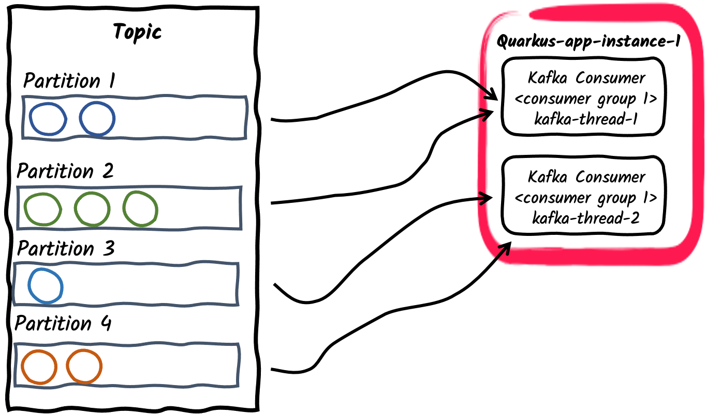
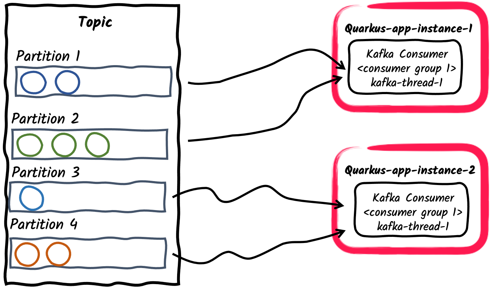

Apache Kafka参考指南
本参考指南展示了如何在您的Quarkus应用程序中利用SmallRye Reactive Messaging与Apache Kafka进行交互。
1. 简介
Apache Kafka 是一个流行的开源分布式事件流平台。它通常用于高性能数据管道、流式分析、数据集成以及任务关键型应用。类似于消息队列或企业消息平台，它可以允许您：
-
发布 (写)以及 订阅 (读)事件流，称为 记录 。
-
在 topic 内持久而可靠地 存储 流式记录。
-
对流式记录进行起始或回溯*处理*。
而所有这些功能都是以分布式、高可扩展性、弹性、容错以及安全的方式提供的。
2. Apache Kafka Quarkus扩展
Quarkus通过 SmallRye Reactive Messaging 框架为Apache Kafka提供支持。基于Eclipse MicroProfile Reactive Messaging 2.0 规范，框架提供了一种灵活的基于CDI和事件驱动的编程模型。
|
本指南深入介绍了Apache Kafka和SmallRye Reactive Messaging框架。要想快速入门，请参考 Getting Started to SmallRye Reactive Messaging with Apache Kafka 。 |
您可以通过在您的项目根目录下运行以下命令来将 smallrye-reactive-messaging-kafka 扩展添加到您的项目中：
quarkus extension add smallrye-reactive-messaging-kafka./mvnw quarkus:add-extension -Dextensions='smallrye-reactive-messaging-kafka'./gradlew addExtension --extensions='smallrye-reactive-messaging-kafka'这会在你的构建文件中添加以下内容:
<dependency>
<groupId>io.quarkus</groupId>
<artifactId>quarkus-smallrye-reactive-messaging-kafka</artifactId>
</dependency>implementation("io.quarkus:quarkus-smallrye-reactive-messaging-kafka")|
The extension includes |
3. 配置Smallrye Kafka Connector
因为Smallrye Reactive Messaging框架支持不同的消息后端，如Apache Kafka，AMQP，Apache Camel，JMS以及MQTT等，所以它使用了一个通用的术语表：
-
应用程序发送和接收 messages 。一条消息包含一个 payload ，并可以用一些 metadata 进行扩展。通过Kafka connector，一条 message 对应于一条Kafka record。
-
信息在 channels 上传输。应用程序组件通过连接 channels 来发布和消费消息。Kafka connector将 channels 映射到Kafka的 _topics_上 。
-
Channels 通过 connectors 连接到消息后端。Connectors通过配置将传入的消息映射到一个指定channel上(该channel由应用程序来消费)，并对发送到指定channel的消息进行收集。每个connector都专用于某种特定的消息传递技术。例如，与Kafka交互的的connector被命名为
smallrye-kafka。
一个配有消息接收channel的Kafka connector的最小配置如下所示：
%prod.kafka.bootstrap.servers=kafka:9092 (1)
mp.messaging.incoming.prices.connector=smallrye-kafka (2)| 1 | 请务必为生产环境配置broker地址。您可以在全局环境配置或使用 mp.messaging.incoming.$channel.bootstrap.servers 属性来针对特定channel配置。在开发模式和运行测试时， Kafka开发服务（Dev Services）会自动启动一个Kafka broker。如果没有提供这个属性，则默认为 localhost:9092 。 |
| 2 | Configure the connector to manage the prices channel. By default, the topic name is same as the channel name. You can configure the topic attribute to override it. |
%prod 前缀表示该属性只在应用程序运行在生产模式下时生效(而不是在开发或测试模式)。更多细节请参考 Profile documentation。
|
|
连接器自动连接
如果在你的classpath上有一个连接器，你可以省略 可以用以下方法禁用这种自动连接功能： |
4. 接收来自Kafka的消息
让我们继续刚才的最小配置。您的Quarkus应用程序可以直接接收消息payload：
import org.eclipse.microprofile.reactive.messaging.Incoming;
import jakarta.enterprise.context.ApplicationScoped;
@ApplicationScoped
public class PriceConsumer {
@Incoming("prices")
public void consume(double price) {
// process your price.
}
}您的应用程序还可以通过另外集中方式来消费接收到的消息：
@Incoming("prices")
public CompletionStage<Void> consume(Message<Double> msg) {
// access record metadata
var metadata = msg.getMetadata(IncomingKafkaRecordMetadata.class).orElseThrow();
// process the message payload.
double price = msg.getPayload();
// Acknowledge the incoming message (commit the offset)
return msg.ack();
}Message 类型允许consuming methond访问接收到消息的metadata并手动进行确认。我们将在 提交策略(Commit Strategies)中探讨不同的确认策略。
如果您想直接访问Kafka record对象，请使用：
@Incoming("prices")
public void consume(ConsumerRecord<String, Double> record) {
String key = record.key(); // Can be `null` if the incoming record has no key
String value = record.value(); // Can be `null` if the incoming record has no value
String topic = record.topic();
int partition = record.partition();
// ...
}ConsumerRecord 由底层Kafka client提供，并且可以直接注入到consumer method中。另一种更简单的方法是使用 Record：
@Incoming("prices")
public void consume(Record<String, Double> record) {
String key = record.key(); // Can be `null` if the incoming record has no key
String value = record.value(); // Can be `null` if the incoming record has no value
}Record 提供了对接收到的Kafka record中key和payload的简单的包装。
另外，您的应用程序可以在您的Bean中注入一个 Multi ，然后像下面的例子那样订阅它的事件：
import io.smallrye.mutiny.Multi;
import org.eclipse.microprofile.reactive.messaging.Channel;
import jakarta.inject.Inject;
import jakarta.ws.rs.GET;
import jakarta.ws.rs.Path;
import jakarta.ws.rs.Produces;
import jakarta.ws.rs.core.MediaType;
import org.jboss.resteasy.reactive.RestStreamElementType;
@Path("/prices")
public class PriceResource {
@Inject
@Channel("prices")
Multi<Double> prices;
@GET
@Path("/prices")
@RestStreamElementType(MediaType.TEXT_PLAIN)
public Multi<Double> stream() {
return prices;
}
}这个例子很好的展示了如何将Kafka consumer与另一个downstream进行集成。在这个例子中，我们将这个downstream暴露为一个服务端事件节点(Server-Sent Events endpoint)。
|
当使用 |
以下类型可以作为 channels 被注入：
@Inject @Channel("prices") Multi<Double> streamOfPayloads;
@Inject @Channel("prices") Multi<Message<Double>> streamOfMessages;
@Inject @Channel("prices") Publisher<Double> publisherOfPayloads;
@Inject @Channel("prices") Publisher<Message<Double>> publisherOfMessages;如前面 Message 例子所示，如果您的注入channel接收到了playloads( Multi<T> )，它可以支持多订阅者自动确认消息。如果您的注入channel收到Message( Multi<Message<T>> )，那么您需要自行负责消息确认和广播。我们将在对多个消费者广播信息 中探讨消息的发送和广播。
|
注入 |
4.1. 阻塞处理
Reactive Messaging会在一个I/O线程中调用您的方法。关于这个话题的更多细节，请看 Quarkus Reactive Architecture documentation 。但是您可能需要经常将Reactive Messaging 与阻塞式处理相结合使用，比如与数据库通信。为此，您需要使用 @Blocking 注解来表该明处理是 阻塞的 ，并且不在调用者线程中运行。
例如，下面的代码演示了如何使用Hibernate与Panache将接收到的payload存储到数据库：
import io.smallrye.reactive.messaging.annotations.Blocking;
import org.eclipse.microprofile.reactive.messaging.Incoming;
import jakarta.enterprise.context.ApplicationScoped;
import jakarta.transaction.Transactional;
@ApplicationScoped
public class PriceStorage {
@Incoming("prices")
@Transactional
public void store(int priceInUsd) {
Price price = new Price();
price.value = priceInUsd;
price.persist();
}
}The complete example is available in the kafka-panache-quickstart directory.
|
有2种
它们效果相同。因此，您可以随意使用。第一个提供了更精细的配置，比如worker pool以及是否保留顺序。第二种，同其他的Quarkus Reactive功能类似，使用默认的worker pool并且保留了顺序。 Detailed information on the usage of |
|
@RunOnVirtualThread
For running the blocking processing on Java virtual threads, see the Quarkus Virtual Thread support with Reactive Messaging documentation. |
|
@Transactional
如果你的方法被注释为 |
4.2. 确认策略(Acknowledgment Strategies)
消费者收到的所有消息都必须被确认(acknowleged)。在没有确认的情况下，消息处理会出错。如果消费者方法收到一个 Record 或一个payload，该消息将通过方法返回被确认，也被称为 Strategy.POST_PROCESSING 。如果消费者方法返回另一个reactive stream或 CompletionStage ，那么当下游消息(downstream message)被确认时，该消息也将被确认。您可以覆盖默认行为从而在消息到达时进行确认( Strategy.PRE_PROCESSING )，或者在消费者方法中不进行任何确认( Strategy.NONE )，如下例所示：
@Incoming("prices")
@Acknowledgment(Acknowledgment.Strategy.PRE_PROCESSING)
public void process(double price) {
// process price
}如果消费者方法接收到一个 Message ，那么确认策略是 Strategy.MANUAL 并且消费者方法将负责对消息进行ack/nack。
@Incoming("prices")
public CompletionStage<Void> process(Message<Double> msg) {
// process price
return msg.ack();
}如上所述，该方法还可以将确认策略设置为 PRE_PROCESSING 或 NONE 。
4.3. 提交策略(Commit Strategies)
当一条由Kafka记录产生的消息被确认时，connector将会调用一个提交策略。这些策略决定了特定topic/分区(topic/partition)的消费者偏移将在何时被提交。提交一个偏移量(offset)表明所有之前的记录已经被处理了。它也是应用程序从崩溃中恢复后或重启后重新开始处理的位置。
由于Kafka的偏移量管理可能很慢，所以每次提交偏移量都会有性能上的损失。然而，如果程序在两次提交之间崩溃，不够频繁的偏移量提交可能会导致消息出现重复提交。
Kafka connector支持三种策略：
-
throttledkeeps track of received messages and commits an offset of the latest acked message in sequence (meaning, all previous messages were also acked). This strategy guarantees at-least-once delivery even if the channel performs asynchronous processing. The connector tracks the received records and periodically (period specified byauto.commit.interval.ms, default: 5000 ms) commits the highest consecutive offset. The connector will be marked as unhealthy if a message associated with a record is not acknowledged inthrottled.unprocessed-record-max-age.ms(default: 60000 ms). Indeed, this strategy cannot commit the offset as soon as a single record processing fails. Ifthrottled.unprocessed-record-max-age.msis set to less than or equal to0, it does not perform any health check verification. Such a setting might lead to running out of memory if there are "poison pill" messages (that are never acked). This strategy is the default ifenable.auto.commitis not explicitly set to true. -
checkpointallows persisting consumer offsets on a state store, instead of committing them back to the Kafka broker. Using theCheckpointMetadataAPI, consumer code can persist a processing state with the record offset to mark the progress of a consumer. When the processing continues from a previously persisted offset, it seeks the Kafka consumer to that offset and also restores the persisted state, continuing the stateful processing from where it left off. The checkpoint strategy holds locally the processing state associated with the latest offset, and persists it periodically to the state store (period specified byauto.commit.interval.ms(default: 5000)). The connector will be marked as unhealthy if no processing state is persisted to the state store incheckpoint.unsynced-state-max-age.ms(default: 10000). Ifcheckpoint.unsynced-state-max-age.msis set to less than or equal to 0, it does not perform any health check verification. For more information, see Stateful processing with Checkpointing -
latest一旦关联消息被确认，Kafka消费者就会提交所接收到的record偏移量(前提是当前偏移量高于之前提交的偏移量)。如果channel在不执行任何异步处理的情况下处理消息的话，这种策略能保证至少一次提交。这种策略不推荐在高负载环境中使用，因为偏移量的提交很昂贵。但是它减少了消息重复提交的风险。 -
ignore不执行任何提交。当消费者的enable.auto.commit属性被明确配置为true时，该策略将是默认策略。它将偏移量的提交委托给底层Kafka client负责。当enable.auto.commit为true的时候 ，该策略 不 保证至少会有一次提交。SmallRye Reactive Messaging是异步处理记录的，所以那些已经被轮询但尚未处理的record的偏移量有可能会被提交。如果提交失败，只有那些尚未被提交的record才会被重新处理。
|
当Kafka connector没有明确启用时，它将禁用Kafka自动提交。这与传统的Kafka消费者不同。如果高吞吐量对您来说很重要而且您不受下游的限制，我们建议要么：
|
Smallrye Reactive Messaging enables implementing custom commit strategies. See SmallRye Reactive Messaging documentation for more information.
4.4. 错误处理策略(Error Handling Strategies)
如果从Kafka record中产生的消息未被确认，那么一个失败策略就会被启用。Kafka connector支持三种策略：
-
fail：直接使程序失败，不再处理更多的记录(默认策略)。未被正确处理的记录的偏移量不会被提交。 -
ignore：记录失败的日志，但消息处理将继续进行。没有被正确处理的记录的偏移量会被提交。 -
dead-letter-queue：未被正确处理的记录的偏移量会被提交，但该记录会被写入Kafka的dead letter topic。
失败策略通过 failure-strategy 属性来设置。
在 dead-letter-queue 情况下 ，您可以配置以下属性：
-
dead-letter-queue.topic: 该topic用来保存未被正确处理的记录，默认为dead-letter-topic-$channel，$channel是channel的名称。 -
dead-letter-queue.key.serializer该序列化器用来对记录到dead letter queue中的record key进行序列化。默认情况下，该序列化器会从key的反序列化器反推出。 -
dead-letter-queue.value.serializer:该序列化器用来对记录到dead letter queue中的record value进行序列化。默认情况下，该序列化器会从value的反序列化器反推出。
所有写入dead letter queue中的记录将包含一组关于原始记录的附加headers：
-
dead-letter-reason ：失败原因
-
dead-letter-cause ：失败的起因(如果有)。
-
dead-letter-topic ：失败记录的原始topic
-
dead-letter-partition ：失败记录的原始分区(integer映射为String)
-
dead-letter-offset ：失败记录的原始偏移量(long映射为String)
Smallrye Reactive Messaging enables implementing custom failure strategies. See SmallRye Reactive Messaging documentation for more information.
4.4.1. 重试处理(Retrying processing)
您可以将Reactive Messaging与 SmallRye 容错结合起来，如果失败的话可以进行重试：
@Incoming("kafka")
@Retry(delay = 10, maxRetries = 5)
public void consume(String v) {
// ... retry if this method throws an exception
}您可以对延迟，重试次数以及抖动(jitter)等处理方式进行设置。
如果您的方法返回一个 Uni 或 CompletionStage ，您需要添加 @NonBlocking 注解：
@Incoming("kafka")
@Retry(delay = 10, maxRetries = 5)
@NonBlocking
public Uni<String> consume(String v) {
// ... retry if this method throws an exception or the returned Uni produce a failure
}
@NonBlocking 注解仅在SmallRye Fault Tolerance 5.1.0及之前版本中需要。从SmallRye Fault Tolerance 5.2.0开始(Quarkus 2.1.0.Final开始)，它就不再必须了。更多信息请参见SmallRye 容错文档 。
|
传入的消息只有在处理成功完成后才会被确认。所以，它在处理成功后会提交偏移量。如果在所有的重试后处理仍然失败， 消息就会被标记为 未确认(nacked) ，然后触发失败策略。
4.4.2. 反序列化失败的处理
当反序列化失败发生时，您可以对其进行拦截并提供一个失败处理策略。为了实现这一点，您需要创建一个实现 DeserializationFailureHandler<T> 接口的bean：
@ApplicationScoped
@Identifier("failure-retry") // Set the name of the failure handler
public class MyDeserializationFailureHandler
implements DeserializationFailureHandler<JsonObject> { // Specify the expected type
@Override
public JsonObject decorateDeserialization(Uni<JsonObject> deserialization, String topic, boolean isKey,
String deserializer, byte[] data, Headers headers) {
return deserialization
.onFailure().retry().atMost(3)
.await().atMost(Duration.ofMillis(200));
}
}要使用这个故障处理的handler，Bean必须使用 @Identifier 限定符来暴露，并且connector配置必须指定属性 mp.messaging.incoming.$channel.[key|value]-deserialization-failure-handler (对于键或值的反序列化器)。
这个handler在被调用提供反序列化的细节，包括以 Uni<T> 所表示的操作(action)。在 Uni 提供的反序列化错误处理策略中，可以实现例如重试，提供回调(fallback)值或超时处理等等方式。
4.5. 消费者组(Consumer Groups)
在Kafka中，消费者组表示可以通过合作来消费来自于同一个topic的数据的一组消费者。 一个topic可以包含一组分区(partitions)。一个topic的分区会在组内的消费者之间分配，从而有效地提高消费的吞吐量。请注意，每个分区只会被分配给组内的一个消费者。但如果分区的数量大于组中消费者的数量， 那么一个消费者可以被分配多个分区。
让我们简单展示一下不同的生产者/消费者模式以及如何使用Quarkus来实现它们：
-
消费者组内使用单一消费者线程
这是一个应用程序订阅Kafka topic的默认方式：每个Kafka Connector将创建一个独立的消费者线程，并将其置于一个单独的消费者组内。消费者组id默认为
quarkus.application.name所设定的应用程序名称。它也可以使用kafka.group.id来设置。
-
一个消费者组内使用多个消费者线程
For a given application instance, the number of consumers inside the consumer group can be configured using
mp.messaging.incoming.$channel.concurrencyproperty. The partitions of the subscribed topic will be divided among the consumer threads. Note that if theconcurrencyvalue exceed the number of partitions of the topic, some consumer threads won’t be assigned any partitions.废弃的APIThe concurrency attribute provides a connector agnostic way for non-blocking concurrent channels and replaces the Kafka connector specific
partitionsattribute. Thepartitionsattribute is therefore deprecated and will be removed in future releases. -
一个消费者组内有多个消费者应用程序
与前面的例子类似，一个应用程序的多个实例可以订阅同一个消费者组。这种方式可以通过
mp.messaging.incoming.$channel.group.id进行配置，或默认为应用程序的名称。这种方式会在应用程序实例之间分配topic的分区。 -
发布/订阅：多个消费者群体订阅同一个topic
最后，不同的应用程序可以使用不同的 consumer group ids 来的独立订阅同一topic。例如，发布在一个名为 orders 的topic上的消息可以被两个消费者应用相互独立的消费，其中一个的group id是
mp.messaging.incoming.orders.group.id=invoicing，另一个是mp.messaging.incoming.orders.group.id=shipping。因此，不同的消费者组可以根据消息消费的需求独立的进行扩容。
|
A common business requirement is to consume and process Kafka records in order. The Kafka broker preserves order of records inside a partition and not inside a topic. Therefore, it is important to think about how records are partitioned inside a topic. The default partitioner uses record key hash to compute the partition for a record, or when the key is not defined, chooses a partition randomly per batch or records. 正常操作中，Kafka消费者会保留分配给它的每个分区里面的records的顺序。Smallrye Reactive Messaging会使用这个顺序进行处理，除非设置了 请注意，由于消费者之间的再平衡(rebalances)，Kafka消费者只保证对单一records的至少一次(at-least-once)处理，这意味着未提交的records 可以 被消费者再次处理。 |
4.5.1. 消费者再平衡监听器(Consumer Rebalance Listener)
在一个消费者组内，随着新老组员的交替，分区将会被重新分配，从而使每个组员都能分配到分区。这就是组的再平衡。为了处理偏移提交以及分区的分配，您可以提供一个消费者再平衡监听器。为了实现这一点，请实现 io.smallrye.reactive.messaging.kafka.KafkaConsumerRebalanceListener 接口，并将其暴露为CDI bean并使用 @Idenfier 修饰符修饰。一个常见的用例是将偏移量存储在一个单独的数据存储中以使其保证语义上的精准一次(exactly-once semantic)，或者在某一个特定的偏移量开始时处理。
监听器会在消费者的topic/分区分配发生变化时启动。例如，当应用程序启动时，它会调用 partitionsAssigned 回调并传入与消费者相关的初始topic/分区集合 。如果后来这个集合发生变化，它会再次调用 partitionsRevoked 和 partitionsAssigned 回调，所以您可以自行实现对应的逻辑。
请注意，再平衡(rebalance)监听器方法是在Kafka轮询线程中被调用的，并且 会 阻塞调用者线程直到完成。这是因为再平衡协议(rebalance protocol)有同步屏障，而在再平衡监听器中的异步代码可能会在同步屏障之后执行。
当topic/分区被从消费者那里分配或撤销时，它会暂停消息传递， 然后在重平衡完成后立即恢复。
如果使用再平衡监听器代替用户来处理偏移量提交(使用 NONE 提交策略)，再平衡监听器就必须在partitionRevoked回调中同步提交偏移量。我们也建议在应用程序停止时使用同样的逻辑。
与Apache Kafka的 ConsumerRebalanceListener 不同， io.smallrye.reactive.messaging.kafka.KafkaConsumerRebalanceListener 的方法会传递Kafka消费者和topic/分区集合。
In the following example we set up a consumer that always starts on messages from at most 10 minutes ago (or offset 0).
First we need to provide a bean that implements io.smallrye.reactive.messaging.kafka.KafkaConsumerRebalanceListener and is annotated with io.smallrye.common.annotation.Identifier.
We then must configure our inbound connector to use this bean.
package inbound;
import io.smallrye.common.annotation.Identifier;
import io.smallrye.reactive.messaging.kafka.KafkaConsumerRebalanceListener;
import org.apache.kafka.clients.consumer.Consumer;
import org.apache.kafka.clients.consumer.OffsetAndTimestamp;
import org.apache.kafka.clients.consumer.TopicPartition;
import jakarta.enterprise.context.ApplicationScoped;
import java.util.Collection;
import java.util.HashMap;
import java.util.Map;
import java.util.logging.Logger;
@ApplicationScoped
@Identifier("rebalanced-example.rebalancer")
public class KafkaRebalancedConsumerRebalanceListener implements KafkaConsumerRebalanceListener {
private static final Logger LOGGER = Logger.getLogger(KafkaRebalancedConsumerRebalanceListener.class.getName());
/**
* When receiving a list of partitions, will search for the earliest offset within 10 minutes
* and seek the consumer to it.
*
* @param consumer underlying consumer
* @param partitions set of assigned topic partitions
*/
@Override
public void onPartitionsAssigned(Consumer<?, ?> consumer, Collection<TopicPartition> partitions) {
long now = System.currentTimeMillis();
long shouldStartAt = now - 600_000L; //10 minute ago
Map<TopicPartition, Long> request = new HashMap<>();
for (TopicPartition partition : partitions) {
LOGGER.info("Assigned " + partition);
request.put(partition, shouldStartAt);
}
Map<TopicPartition, OffsetAndTimestamp> offsets = consumer.offsetsForTimes(request);
for (Map.Entry<TopicPartition, OffsetAndTimestamp> position : offsets.entrySet()) {
long target = position.getValue() == null ? 0L : position.getValue().offset();
LOGGER.info("Seeking position " + target + " for " + position.getKey());
consumer.seek(position.getKey(), target);
}
}
}package inbound;
import io.smallrye.reactive.messaging.kafka.IncomingKafkaRecord;
import org.eclipse.microprofile.reactive.messaging.Acknowledgment;
import org.eclipse.microprofile.reactive.messaging.Incoming;
import jakarta.enterprise.context.ApplicationScoped;
import java.util.concurrent.CompletableFuture;
import java.util.concurrent.CompletionStage;
@ApplicationScoped
public class KafkaRebalancedConsumer {
@Incoming("rebalanced-example")
@Acknowledgment(Acknowledgment.Strategy.NONE)
public CompletionStage<Void> consume(IncomingKafkaRecord<Integer, String> message) {
// We don't need to ACK messages because in this example,
// we set offset during consumer rebalance
return CompletableFuture.completedFuture(null);
}
}如要配置inbound connector使用所提供的监听器，我们可以通过消费者再平衡监听器的标识符 mp.messaging.incoming.rebalanced-example.consumer-rebalance-listener.name=rebalanced-example.rebalancer 来设置
或者令监听器的名字与消费者组的ID相同：
mp.messaging.incoming.rebalanced-example.group.id=rebalanced-example.rebalancer
注意，设置消费者再平衡监听器的名称的方式要比使用组ID的方式优先被使用。
4.5.2. 使用单一的消费者组
如果您想处理一个topic中的所有记录(从其最开始时)，您需要：
-
设置
auto.offset.reset = earliest -
将您的消费者分配到一个不被任何其他程序使用的消费者组。
Quarkus生成的UUID在两次执行之间会发生变化(包括在dev模式下)。因此，您可以确定没有其他消费者使用它，而且每次您的应用程序启动时都会收到一个新的唯一的组ID。
您可以使用生成的UUID作为消费者组id，如下所示：
mp.messaging.incoming.your-channel.auto.offset.reset=earliest
mp.messaging.incoming.your-channel.group.id=${quarkus.uuid}
如果没有设置 group.id ，则其默认与 quarkus.application.name 相同。
|
4.5.3. Manual topic-partition assignment
The assign-seek channel attribute allows manually assigning topic-partitions to a Kafka incoming channel,
and optionally seek to a specified offset in the partition to start consuming records.
If assign-seek is used, the consumer will not be dynamically subscribed to topics,
but instead will statically assign the described partitions.
In manual topic-partition rebalancing doesn’t happen and therefore rebalance listeners are never called.
The attribute takes a list of triplets separated by commas: <topic>:<partition>:<offset>.
For example, the configuration
mp.messaging.incoming.data.assign-seek=topic1:0:10, topic2:1:20assigns the consumer to:
-
Partition 0 of topic 'topic1', setting the initial position at offset 10.
-
Partition 1 of topic 'topic2', setting the initial position at offset 20.
The topic, partition, and offset in each triplet can have the following variations:
-
If the topic is omitted, the configured topic will be used.
-
If the offset is omitted, partitions are assigned to the consumer but won’t be sought to offset.
-
If offset is 0, it seeks to the beginning of the topic-partition.
-
If offset is -1, it seeks to the end of the topic-partition.
4.6. 批量接收Kafka记录
默认情况下，接收方法会单独接收每条Kafka记录。在后台，Kafka消费者client会不断地轮询broker，并批量接收记录然后放入 ConsumerRecords 容器中。
在 批量 模式下，您的程序可以一次性接收消费者 轮询 返回的所有记录。
为了达到这一点，您需要指定一个兼容的容器类型来接收所有数据：
@Incoming("prices")
public void consume(List<Double> prices) {
for (double price : prices) {
// process price
}
}The incoming method can also receive Message<List<Payload>>, KafkaRecordBatch<Key, Payload>, and ConsumerRecords<Key, Payload> types.
They give access to record details such as offset or timestamp:
@Incoming("prices")
public CompletionStage<Void> consumeMessage(KafkaRecordBatch<String, Double> records) {
for (KafkaRecord<String, Double> record : records) {
String payload = record.getPayload();
String topic = record.getTopic();
// process messages
}
// ack will commit the latest offsets (per partition) of the batch.
return records.ack();
}注意，对于接收到的记录批次的成功处理会提交所收到批次内每个分区的最新偏移量。所配置的提交策略将只应用于这些记录。
反之，如果处理过程抛出一个异常，所有的消息都_不会被确认(nacked)_ ，并且对批次中的所有记录应用失败策略。
|
Quarkus自动检测incoming channels 的批处理类型并自动设置批处理配置。您可以用 |
4.7. Stateful processing with Checkpointing
|
The |
Smallrye Reactive Messaging checkpoint commit strategy allows consumer applications to process messages in a stateful manner, while also respecting Kafka consumer scalability.
An incoming channel with checkpoint commit strategy persists consumer offsets on an external
state store, such as a relational database or a key-value store.
As a result of processing consumed records, the consumer application can accumulate an internal state for each topic-partition assigned to the Kafka consumer.
This local state will be periodically persisted to the state store and will be associated with the offset of the record that produced it.
This strategy does not commit any offsets to the Kafka broker, so when new partitions get assigned to the consumer, i.e. consumer restarts or consumer group instances scale, the consumer resumes the processing from the latest checkpointed offset with its saved state.
The @Incoming channel consumer code can manipulate the processing state through the CheckpointMetadata API.
For example, a consumer calculating the moving average of prices received on a Kafka topic would look the following:
package org.acme;
import java.util.concurrent.CompletionStage;
import jakarta.enterprise.context.ApplicationScoped;
import org.eclipse.microprofile.reactive.messaging.Incoming;
import org.eclipse.microprofile.reactive.messaging.Message;
import io.smallrye.reactive.messaging.kafka.KafkaRecord;
import io.smallrye.reactive.messaging.kafka.commit.CheckpointMetadata;
@ApplicationScoped
public class MeanCheckpointConsumer {
@Incoming("prices")
public CompletionStage<Void> consume(Message<Double> record) {
// Get the `CheckpointMetadata` from the incoming message
CheckpointMetadata<AveragePrice> checkpoint = CheckpointMetadata.fromMessage(record);
// `CheckpointMetadata` allows transforming the processing state
// Applies the given function, starting from the value `0.0` when no previous state exists
checkpoint.transform(new AveragePrice(), average -> average.update(record.getPayload()), /* persistOnAck */ true);
// `persistOnAck` flag set to true, ack will persist the processing state
// associated with the latest offset (per partition).
return record.ack();
}
static class AveragePrice {
long count;
double mean;
AveragePrice update(double newPrice) {
mean += ((newPrice - mean) / ++count);
return this;
}
}
}The transform method applies the transformation function to the current state, producing a changed state and registering it locally for checkpointing.
By default, the local state is persisted to the state store periodically, period specified by auto.commit.interval.ms, (default: 5000).
If persistOnAck flag is given, the latest state is persisted to the state store eagerly on message acknowledgment.
The setNext method works similarly directly setting the latest state.
The checkpoint commit strategy tracks when a processing state is last persisted for each topic-partition.
If an outstanding state change can not be persisted for checkpoint.unsynced-state-max-age.ms (default: 10000), the channel is marked unhealthy.
4.7.1. State stores
State store implementations determine where and how the processing states are persisted.
This is configured by the mp.messaging.incoming.[channel-name].checkpoint.state-store property.
The serialization of state objects depends on the state store implementation.
In order to instruct state stores for serialization can require configuring the class name of state objects using mp.messaging.incoming.[channel-name].checkpoint.state-type property.
Quarkus provides following state store implementations:
-
quarkus-redis: Uses thequarkus-redis-clientextension to persist processing states. Jackson is used to serialize processing state in Json. For complex objects it is required to configure thecheckpoint.state-typeproperty with the class name of the object. By default, the state store uses the default redis client, but if a named client is to be used, the client name can be specified using themp.messaging.incoming.[channel-name].checkpoint.quarkus-redis.client-nameproperty. Processing states will be stored in Redis using the key naming scheme[consumer-group-id]:[topic]:[partition].
For example the configuration of the previous code would be the following:
mp.messaging.incoming.prices.group.id=prices-checkpoint
# ...
mp.messaging.incoming.prices.commit-strategy=checkpoint
mp.messaging.incoming.prices.checkpoint.state-store=quarkus-redis
mp.messaging.incoming.prices.checkpoint.state-type=org.acme.MeanCheckpointConsumer.AveragePrice
# ...
# if using a named redis client
mp.messaging.incoming.prices.checkpoint.quarkus-redis.client-name=my-redis
quarkus.redis.my-redis.hosts=redis://localhost:7000
quarkus.redis.my-redis.password=<redis-pwd>-
quarkus-hibernate-reactive: Uses thequarkus-hibernate-reactiveextension to persist processing states. Processing state objects are required to be a Jakarta Persistence entity and extend theCheckpointEntityclass, which handles object identifiers composed of the consumer group id, topic and partition. Therefore, the class name of the entity needs to be configured using thecheckpoint.state-typeproperty.
For example the configuration of the previous code would be the following:
mp.messaging.incoming.prices.group.id=prices-checkpoint
# ...
mp.messaging.incoming.prices.commit-strategy=checkpoint
mp.messaging.incoming.prices.checkpoint.state-store=quarkus-hibernate-reactive
mp.messaging.incoming.prices.checkpoint.state-type=org.acme.AveragePriceEntityWith AveragePriceEntity being a Jakarta Persistence entity extending CheckpointEntity:
package org.acme;
import jakarta.persistence.Entity;
import io.quarkus.smallrye.reactivemessaging.kafka.CheckpointEntity;
@Entity
public class AveragePriceEntity extends CheckpointEntity {
public long count;
public double mean;
public AveragePriceEntity update(double newPrice) {
mean += ((newPrice - mean) / ++count);
return this;
}
}-
quarkus-hibernate-orm: Uses thequarkus-hibernate-ormextension to persist processing states. It is similar to the previous state store, but it uses Hibernate ORM instead of Hibernate Reactive.
When configured, it can use a named persistence-unit for the checkpointing state store:
mp.messaging.incoming.prices.commit-strategy=checkpoint
mp.messaging.incoming.prices.checkpoint.state-store=quarkus-hibernate-orm
mp.messaging.incoming.prices.checkpoint.state-type=org.acme.AveragePriceEntity
mp.messaging.incoming.prices.checkpoint.quarkus-hibernate-orm.persistence-unit=prices
# ... Setup "prices" persistence unit
quarkus.datasource."prices".db-kind=postgresql
quarkus.datasource."prices".username=<your username>
quarkus.datasource."prices".password=<your password>
quarkus.datasource."prices".jdbc.url=jdbc:postgresql://localhost:5432/hibernate_orm_test
quarkus.hibernate-orm."prices".datasource=prices
quarkus.hibernate-orm."prices".packages=org.acmeFor instructions on how to implement custom state stores, see Implementing State Stores.
5. 向Kafka发送消息
Kafka Connector中用于发送的 channels 的配置与用于接收的 channel 的配置类似：
%prod.kafka.bootstrap.servers=kafka:9092 (1)
mp.messaging.outgoing.prices-out.connector=smallrye-kafka (2)
mp.messaging.outgoing.prices-out.topic=prices (3)| 1 | 请配置生产环境的broker位置。您可以在全局配置，或使用 mp.messaging.outgoing.$channel.bootstrap.servers 来针对特定channel配置它。在开发模式和运行测试时， Kafka开发服务（Dev Services）会自动启动一个Kafka broker。如果该属性未提供，它将默认为 localhost:9092 。 |
| 2 | 配置connector来管理 prices-out channel。 |
| 3 | 默认情况下，topic名称与channel名称相同。您可以配置topic属性来覆盖它。 |
|
在应用配置里面，channel名称是唯一的。因此，如果您打算在相同topic上同时配置一个接收和一个发送的channel，您需要对这两个 channels 使用不同的名称(比如本指南的例子， |
然后，您的程序可以生成消息并将其发布到 prices-out channel。它可以使用 double payloads，如下所示：
import io.smallrye.mutiny.Multi;
import org.eclipse.microprofile.reactive.messaging.Outgoing;
import jakarta.enterprise.context.ApplicationScoped;
import java.time.Duration;
import java.util.Random;
@ApplicationScoped
public class KafkaPriceProducer {
private final Random random = new Random();
@Outgoing("prices-out")
public Multi<Double> generate() {
// Build an infinite stream of random prices
// It emits a price every second
return Multi.createFrom().ticks().every(Duration.ofSeconds(1))
.map(x -> random.nextDouble());
}
}|
您不应该在您的代码中直接调用被标记了 |
请注意， generate 方法返回了一个 Multi<Double> ，它实现了Reactive Streams Publisher 接口。Quarkus框架会使用这个发布者生成消息，并将其发送到您配置的Kafka topic中。
为了发送键/值对， 您可以直接返回一个 io.smallrye.reactive.messaging.kafka.Record 来代理一个payload：
@Outgoing("out")
public Multi<Record<String, Double>> generate() {
return Multi.createFrom().ticks().every(Duration.ofSeconds(1))
.map(x -> Record.of("my-key", random.nextDouble()));
}Payload可以被封装在 org.eclipse.microprofile.reactive.messaging.Message，以便对写入的记录有更多的控制：
@Outgoing("generated-price")
public Multi<Message<Double>> generate() {
return Multi.createFrom().ticks().every(Duration.ofSeconds(1))
.map(x -> Message.of(random.nextDouble())
.addMetadata(OutgoingKafkaRecordMetadata.<String>builder()
.withKey("my-key")
.withTopic("my-key-prices")
.withHeaders(new RecordHeaders().add("my-header", "value".getBytes()))
.build()));
}OutgoingKafkaRecordMetadata 允许您设置Kafka记录的元数据属性，如 key ， topic ， partition 或 timestamp 。一种场景是动态地选择消息的目标topic。在这种情况下，您需要使用出站元数据(outgoing metadata)来设置topic名称，而不是在配置文件中配置topic。
除了返回Reactive Stream Publisher ( Multi 实现了 Publisher )的方法签名外，发送方法也可以返回单个消息。在这种情况下，生产者将使用该方法作为生成器来创建一个无限的流(infinite stream)。
@Outgoing("prices-out") T generate(); // T excluding void
@Outgoing("prices-out") Message<T> generate();
@Outgoing("prices-out") Uni<T> generate();
@Outgoing("prices-out") Uni<Message<T>> generate();
@Outgoing("prices-out") CompletionStage<T> generate();
@Outgoing("prices-out") CompletionStage<Message<T>> generate();5.1. Sending messages with Emitter
有时，您需要使用命令式的方式来发送消息。
例如，如果您需要在REST节点内收到一个POST请求时向一个流发送消息。在这种情况下，您无法使用 @Outgoing ，因为您的方法有参数。
这种情况下您可以使用 Emitter 。
import org.eclipse.microprofile.reactive.messaging.Channel;
import org.eclipse.microprofile.reactive.messaging.Emitter;
import jakarta.inject.Inject;
import jakarta.ws.rs.POST;
import jakarta.ws.rs.Path;
import jakarta.ws.rs.Consumes;
import jakarta.ws.rs.core.MediaType;
@Path("/prices")
public class PriceResource {
@Inject
@Channel("price-create")
Emitter<Double> priceEmitter;
@POST
@Consumes(MediaType.TEXT_PLAIN)
public void addPrice(Double price) {
CompletionStage<Void> ack = priceEmitter.send(price);
}
}发送一个payload会返回一个 CompletionStage ，并且它会在消息被确认时完成。如果消息传输失败， CompletionStage 会以异常结束，并且包含未被确认的原因。
|
|
|
使用 |
通过 Emitter API，您也可以将要发送的payload封装在 Message<T> 中 。与前面的例子一样， Message 让您以不同的方式处理确认/拒绝(ack/nack)的情况。
import java.util.concurrent.CompletableFuture;
import org.eclipse.microprofile.reactive.messaging.Channel;
import org.eclipse.microprofile.reactive.messaging.Emitter;
import jakarta.inject.Inject;
import jakarta.ws.rs.POST;
import jakarta.ws.rs.Path;
import jakarta.ws.rs.Consumes;
import jakarta.ws.rs.core.MediaType;
@Path("/prices")
public class PriceResource {
@Inject @Channel("price-create") Emitter<Double> priceEmitter;
@POST
@Consumes(MediaType.TEXT_PLAIN)
public void addPrice(Double price) {
priceEmitter.send(Message.of(price)
.withAck(() -> {
// Called when the message is acked
return CompletableFuture.completedFuture(null);
})
.withNack(throwable -> {
// Called when the message is nacked
return CompletableFuture.completedFuture(null);
}));
}
}如果您偏好于使用Reactive Stream APIs，您可以使用 MutinyEmitter ，它将在 send 方法中返回 Uni<Void> 。因此，您可以使用Mutiny APIs来处理下游的信息和错误。
import org.eclipse.microprofile.reactive.messaging.Channel;
import jakarta.inject.Inject;
import jakarta.ws.rs.POST;
import jakarta.ws.rs.Path;
import jakarta.ws.rs.Consumes;
import jakarta.ws.rs.core.MediaType;
import io.smallrye.reactive.messaging.MutinyEmitter;
@Path("/prices")
public class PriceResource {
@Inject
@Channel("price-create")
MutinyEmitter<Double> priceEmitter;
@POST
@Consumes(MediaType.TEXT_PLAIN)
public Uni<String> addPrice(Double price) {
return quoteRequestEmitter.send(price)
.map(x -> "ok")
.onFailure().recoverWithItem("ko");
}
}也可以通过 sendAndAwait 方法在发送事件到emitter的时候进行阻塞。只有当事件被接收者确认或拒绝时，它才会从该方法中返回。
|
废弃的API
新的 |
|
废弃的API
|
More information on how to use Emitter can be found in SmallRye Reactive Messaging – Emitters and Channels
5.2. 写确认
当Kafka broker收到一条记录时，它的确认可能需要时间，这取决于配置。此外，它还会在内存中存储不能写入的记录。
默认情况下，connector会等待Kafka确认记录以继续处理(确认收到的消息)。您可以通过将 waitForWriteCompletion 设置为 false 来禁用这个功能。
请注意， acks 属性对记录的确认有巨大影响。
如果一条记录无法写入，消息就会被拒绝。
5.3. 背压
Kafka的出站connector负责处理背压，并且会监测等待写入Kafka broker中的in-flight的消息数量。in-flight的消息的数量是通过 max-inflight-messages 配置的，默认为1024。
Connector只会并行发送指定数量的消息。在至少一个in-flight的消息被broker确认之前，其他消息都不会被发送。然后，当broker中有in-flight的消息得到确认时，connector才会向Kafka写入一个新的消息。请确保相应地配置Kafka的 batch.size 和 linger.ms 属性。
您也可以通过将 max-inflight-messages 设置为 0 来取消in-flight消息的限制。但请注意，如果请求数量达到 max.in.flight.requests.per.connection 指定的值，Kafka生产者可能会阻塞。
5.4. 重试消息的发送
当Kafka生产者收到来自服务器的错误时，如果它是一个暂时的、可恢复的错误，那么客户端将重试发送这批消息。这种行为是由 retries 和 retry.backoff.ms 参数控制的。除此之外，SmallRye Reactive Messaging还会在可恢复的错误中重试单个消息，这取决于 retries 和 delivery.timeout.ms 参数。
请注意，虽然在对一个可靠的系统来说拥有重试机制是一种最佳实践，但 max.in.flight.requests.per.connection 参数默认为 5 将会意味着消息的顺序不会被保证。如果消息的顺序对您来说是必须保证的，将 max.in.flight.requests.per.connection 设置为 1 将确保一次只发送一批消息，但代价是限制生产者的吞吐量。
关于如何对错误处理应用重试机制，请参见 [重试-处理] 一节。
5.5. 处理序列化失败
对于Kafka生产者客户端来说序列化失败是不可恢复的，因此消息发送不会被重试。在这些情况下，您可能需要为序列化器设置一个失败策略。为了实现这一点，您需要一个实现了 SerializationFailureHandler<T> 接口的bean：
@ApplicationScoped
@Identifier("failure-fallback") // Set the name of the failure handler
public class MySerializationFailureHandler
implements SerializationFailureHandler<JsonObject> { // Specify the expected type
@Override
public byte[] decorateSerialization(Uni<byte[]> serialization, String topic, boolean isKey,
String serializer, Object data, Headers headers) {
return serialization
.onFailure().retry().atMost(3)
.await().indefinitely();
}
}要使用该故障处理，Bean必须用 @Identifier 限定符修饰，并且connector的配置必须指定属性 mp.messaging.outgoing.$channel.[key|value]-serialization-failure-handler (对于键或值序列化器)。
处理器被调用，并被提供序列化的细节，包括以 Uni<byte[]> 表示的操作。注意，该方法必须对在结果处进行等待，并返回序列化后的字节数组。
5.6. 内存 channels
在某些情况下，使用消息模式在同一个应用程序内传输消息是很方便的。当您没有将channel连接到像Kafka这样的消息后端时，一切都会发生在内存中，并且流会通过链式方法创建。每个链式调用仍是一个响应式流，并执行背压策略。
Quarkus框架会验证生产者/消费者链是否完整，这意味着如果应用程序将消息写入内存channel(仅使用 @Outgoing 修饰符方法，或 Emitter )，它也必须从应用程序内部消费消息(仅 @Incoming 修饰符方法 ，或使用不受管理的流)。
5.7. 对多个消费者广播信息
默认情况下，一个channel可以关联到一个单一的消费者上，通过使用 @Incoming 方法或 @Channel 响应式应式流。在程序启动时，channels 会被验证，以形成一个由单个消费者和生产者组成的消费者和生产者链。您可以通过在channel上设置 mp.messaging.$channel.broadcast=true 来覆盖这种行为。
在内存 channels 的情况下， @Broadcast 注释可以用在 @Outgoing 方法上。比如说,
import java.util.Random;
import jakarta.enterprise.context.ApplicationScoped;
import org.eclipse.microprofile.reactive.messaging.Incoming;
import org.eclipse.microprofile.reactive.messaging.Outgoing;
import io.smallrye.reactive.messaging.annotations.Broadcast;
@ApplicationScoped
public class MultipleConsumer {
private final Random random = new Random();
@Outgoing("in-memory-channel")
@Broadcast
double generate() {
return random.nextDouble();
}
@Incoming("in-memory-channel")
void consumeAndLog(double price) {
System.out.println(price);
}
@Incoming("in-memory-channel")
@Outgoing("prices2")
double consumeAndSend(double price) {
return price;
}
}|
相应地，同一 channel 上的多个生产者可以通过设置 |
Repeating the @Outgoing annotation on outbound or processing methods allows another way of dispatching messages to multiple outgoing channels:
import java.util.Random;
import jakarta.enterprise.context.ApplicationScoped;
import org.eclipse.microprofile.reactive.messaging.Outgoing;
@ApplicationScoped
public class MultipleProducers {
private final Random random = new Random();
@Outgoing("generated")
@Outgoing("generated-2")
double priceBroadcast() {
return random.nextDouble();
}
}In the previous example generated price will be broadcast to both outbound channels.
The following example selectively sends messages to multiple outgoing channels using the Targeted container object,
containing key as channel name and value as message payload.
import jakarta.enterprise.context.ApplicationScoped;
import org.eclipse.microprofile.reactive.messaging.Incoming;
import org.eclipse.microprofile.reactive.messaging.Outgoing;
import io.smallrye.reactive.messaging.Targeted;
@ApplicationScoped
public class TargetedProducers {
@Incoming("in")
@Outgoing("out1")
@Outgoing("out2")
@Outgoing("out3")
public Targeted process(double price) {
Targeted targeted = Targeted.of("out1", "Price: " + price,
"out2", "Quote: " + price);
if (price > 90.0) {
return targeted.with("out3", price);
}
return targeted;
}
}Note that the auto-detection for Kafka serializers doesn’t work for signatures using the Targeted.
For more details on using multiple outgoings, please refer to the SmallRye Reactive Messaging documentation.
5.8. Kafka事务处理
Kafka 事务支持对多个 Kafka 主题和分区进行原子写入。 Kafka 连接器提供了 KafkaTransactions 自定义emitter，用于在事务中写入 Kafka 记录。 它可以作为常规emitter @Channel 注入：
import jakarta.enterprise.context.ApplicationScoped;
import org.eclipse.microprofile.reactive.messaging.Channel;
import io.smallrye.mutiny.Uni;
import io.smallrye.reactive.messaging.kafka.KafkaRecord;
import io.smallrye.reactive.messaging.kafka.transactions.KafkaTransactions;
@ApplicationScoped
public class KafkaTransactionalProducer {
@Channel("tx-out-example")
KafkaTransactions<String> txProducer;
public Uni<Void> emitInTransaction() {
return txProducer.withTransaction(emitter -> {
emitter.send(KafkaRecord.of(1, "a"));
emitter.send(KafkaRecord.of(2, "b"));
emitter.send(KafkaRecord.of(3, "c"));
return Uni.createFrom().voidItem();
});
}
}传入 withTransaction 方法的函数参数会使用 TransactionalEmitter 来产生记录，并返回 Uni 做为事务结果。
-
如果处理成功完成，则刷新生产者并提交事务。
-
如果处理过程抛出异常，会返回失败的
Uni，或将TransactionalEmitter标记为中止，然后事务会被中止。
Kafka 事务生产者需要配置 acks=all 客户端属性，以及 transactional.id 的唯一 id，这意味着 enable.idempotence=true 。 当 Quarkus 检测到传出通道使用 KafkaTransactions 时，它会在通道上配置这些属性，为 transactional.id 属性提供默认值 "${quarkus.application.name}-${channelName}" 。
请注意，要在生产环境使用，必须确保 transactional.id 在所有应用实例中是唯一的。
|
虽然普通的消息emitter支持并发调用 Note that in Reactive Messaging, the execution of processing methods, is already serialized, unless |
6. Kafka Request-Reply
The Kafka Request-Reply pattern allows to publish a request record to a Kafka topic and then await for a reply record that responds to the initial request.
The Kafka connector provides the KafkaRequestReply custom emitter that implements the requestor (or the client) of the request-reply pattern for Kafka outbound channels:
It can be injected as a regular emitter @Channel:
import jakarta.enterprise.context.ApplicationScoped;
import jakarta.ws.rs.POST;
import jakarta.ws.rs.Path;
import jakarta.ws.rs.Produces;
import jakarta.ws.rs.core.MediaType;
import org.eclipse.microprofile.reactive.messaging.Channel;
import io.smallrye.mutiny.Uni;
import io.smallrye.reactive.messaging.kafka.reply.KafkaRequestReply;
@ApplicationScoped
@Path("/kafka")
public class KafkaRequestReplyEmitter {
@Channel("request-reply")
KafkaRequestReply<Integer, String> requestReply;
@POST
@Path("/req-rep")
@Produces(MediaType.TEXT_PLAIN)
public Uni<String> post(Integer request) {
return requestReply.request(request);
}
}The request method publishes the record to the configured target topic of the outgoing channel,
and polls a reply topic (by default, the target topic with -replies suffix) for a reply record.
When the reply is received the returned Uni is completed with the record value.
The request send operation generates a correlation id and sets a header (by default REPLY_CORRELATION_ID),
which it expects to be sent back in the reply record.
The replier can be implemented using a Reactive Messaging processor (see 处理消息).
For more information on Kafka Request Reply feature and advanced configuration options, see the Smallrye Reactive Messaging Documentation.
7. 处理消息
应用的流式数据常常需要从一个topic中消费一些事件，对其进行处理并将结果发布到不同的topic中。一个处理器方法可以简单地通过使用 @Incoming 和 @Outgoing 注解来实现：
import org.eclipse.microprofile.reactive.messaging.Incoming;
import org.eclipse.microprofile.reactive.messaging.Outgoing;
import jakarta.enterprise.context.ApplicationScoped;
@ApplicationScoped
public class PriceProcessor {
private static final double CONVERSION_RATE = 0.88;
@Incoming("price-in")
@Outgoing("price-out")
public double process(double price) {
return price * CONVERSION_RATE;
}
}process 方法的参数是传入的消息的payload，而返回值将被用作传出的消息的payload。之前提到的参数和返回类型的签名也被支持，如 Message<T> ， Record<K, V> 等等。
您可以通过消费和返回响应式流 Multi<T> 类型来应用异步流处理：
import jakarta.enterprise.context.ApplicationScoped;
import org.eclipse.microprofile.reactive.messaging.Incoming;
import org.eclipse.microprofile.reactive.messaging.Outgoing;
import io.smallrye.mutiny.Multi;
@ApplicationScoped
public class PriceProcessor {
private static final double CONVERSION_RATE = 0.88;
@Incoming("price-in")
@Outgoing("price-out")
public Multi<Double> process(Multi<Integer> prices) {
return prices.filter(p -> p > 100).map(p -> p * CONVERSION_RATE);
}
}7.1. 传播记录键
在处理信息时，您可以将传入的记录键发送给传出的记录。
通过启用 mp.messaging.outgoing.$channel.propagate-record-key=true ，记录键传播可以产生与传入记录的 键 相同的传出记录。
如果传出的记录已经包含一个 键，那么它 不会 被传入的记录键的键所覆盖。如果传入的记录键为_空_，那么 mp.messaging.outgoing.$channel.key 设置的值会被使用。
7.2. （Exactly-Once Processing）精确一次处理
Kafka 事务可以同时管理其中的消费端和生产端的消息偏移量。 这使得消费端能够以 consume-transform-produce 模式与生产端耦合，也称为 exactly-once 精确一次性处理。
KafkaTransactions 定制emitter可以提供一种对事务中传入的 Kafka 消息进行一次性处理的方法。
以下示例包括在事务中进行 Kafka 记录的批处理。
import jakarta.enterprise.context.ApplicationScoped;
import org.eclipse.microprofile.reactive.messaging.Channel;
import org.eclipse.microprofile.reactive.messaging.Incoming;
import org.eclipse.microprofile.reactive.messaging.OnOverflow;
import io.smallrye.mutiny.Uni;
import io.smallrye.reactive.messaging.kafka.KafkaRecord;
import io.smallrye.reactive.messaging.kafka.KafkaRecordBatch;
import io.smallrye.reactive.messaging.kafka.transactions.KafkaTransactions;
@ApplicationScoped
public class KafkaExactlyOnceProcessor {
@Channel("prices-out")
@OnOverflow(value = OnOverflow.Strategy.BUFFER, bufferSize = 500) (3)
KafkaTransactions<Integer> txProducer;
@Incoming("prices-in")
public Uni<Void> emitInTransaction(KafkaRecordBatch<String, Integer> batch) { (1)
return txProducer.withTransactionAndAck(batch, emitter -> { (2)
for (KafkaRecord<String, Integer> record : batch) {
emitter.send(KafkaRecord.of(record.getKey(), record.getPayload() + 1)); (3)
}
return Uni.createFrom().voidItem();
});
}
}| 1 | 建议在消费端批处理模式中采用exactly-once。 虽然可以将它与单个 Kafka 消息一起使用，但这样会对性能产生重大影响。 |
| 2 | 消费的 KafkaRecordBatch 消息被传递给 KafkaTransactions#withTransactionAndAck ，以处理偏移提交和消息确认。 |
| 3 | send 方法将记录通过事务写入 Kafka，而无需等待来自代理的发送回执。 等待写入 Kafka 的消息将被缓冲，并在提交事务之前刷新。 因此，建议配置 @OnOverflow bufferSize 以适应足够的消息，例如 max.poll.records，即批处理中返回的最大记录数。
|
当使用（exactly-once）精确一次处理时，消耗的消息偏移量提交由事务处理，因此应用程序不应通过其他方式提交偏移量。 消费者应该有 enable.auto.commit=false （默认）并明确设置 commit-strategy=ignore ：
mp.messaging.incoming.prices-in.commit-strategy=ignore
mp.messaging.incoming.prices-in.failure-strategy=ignore7.2.1. （exactly-once）精确一次处理的错误处理
如果事务失败并被中止，则从 KafkaTransactions#withTransaction 返回的 Uni 将产生失败。 应用程序可以选择处理错误情况，但如果从 @Incoming 方法返回失败的 Uni ，则传入通道将有效地失败并停止响应流。
KafkaTransactions#withTransactionAndAck 方法确认和确认消息，但 不会 返回失败的 Uni 。 Nacked 消息将由传入通道的故障策略处理，（参见错误处理策略(Error Handling Strategies)）。 配置 failure-strategy=ignore 只是将 Kafka 消费者重置为最后提交的偏移量并从那里恢复消费。
8. 直接访问Kafka客户端
在少数情况下，您可能需要访问底层的Kafka客户端。KafkaClientService 提供线程安全的方式来访问 Producer 和 Consumer 。
import jakarta.enterprise.context.ApplicationScoped;
import jakarta.enterprise.event.Observes;
import jakarta.inject.Inject;
import org.apache.kafka.clients.producer.ProducerRecord;
import io.quarkus.runtime.StartupEvent;
import io.smallrye.reactive.messaging.kafka.KafkaClientService;
import io.smallrye.reactive.messaging.kafka.KafkaConsumer;
import io.smallrye.reactive.messaging.kafka.KafkaProducer;
@ApplicationScoped
public class PriceSender {
@Inject
KafkaClientService clientService;
void onStartup(@Observes StartupEvent startupEvent) {
KafkaProducer<String, Double> producer = clientService.getProducer("generated-price");
producer.runOnSendingThread(client -> client.send(new ProducerRecord<>("prices", 2.4)))
.await().indefinitely();
}
}|
|
您也可以把Kafka配置注入到您的应用程序中来直接创建Kafka生产者，消费者以及管理客户端：
import io.smallrye.common.annotation.Identifier;
import org.apache.kafka.clients.admin.AdminClient;
import org.apache.kafka.clients.admin.AdminClientConfig;
import org.apache.kafka.clients.admin.KafkaAdminClient;
import jakarta.enterprise.context.ApplicationScoped;
import jakarta.enterprise.inject.Produces;
import jakarta.inject.Inject;
import java.util.HashMap;
import java.util.Map;
@ApplicationScoped
public class KafkaClients {
@Inject
@Identifier("default-kafka-broker")
Map<String, Object> config;
@Produces
AdminClient getAdmin() {
Map<String, Object> copy = new HashMap<>();
for (Map.Entry<String, Object> entry : config.entrySet()) {
if (AdminClientConfig.configNames().contains(entry.getKey())) {
copy.put(entry.getKey(), entry.getValue());
}
}
return KafkaAdminClient.create(copy);
}
}default-kafka-broker 配置map包含所有以 kafka. 或 KAFKA_ 为前缀的应用属性。更多的配置选项，请查看 [kafka配置方案] 。
9. JSON序列化
Quarkus有内置的能力来处理JSON格式的Kafka消息。
假设我们有一个 Fruit 数据类，如下所示：
public class Fruit {
public String name;
public int price;
public Fruit() {
}
public Fruit(String name, int price) {
this.name = name;
this.price = price;
}
}而我们想用它来接收来自Kafka的消息，从而进行一些价格转换，并将消息传回Kafka。
import io.smallrye.reactive.messaging.annotations.Broadcast;
import org.eclipse.microprofile.reactive.messaging.Incoming;
import org.eclipse.microprofile.reactive.messaging.Outgoing;
import jakarta.enterprise.context.ApplicationScoped;
/**
* A bean consuming data from the "fruit-in" channel and applying some price conversion.
* The result is pushed to the "fruit-out" channel.
*/
@ApplicationScoped
public class FruitProcessor {
private static final double CONVERSION_RATE = 0.88;
@Incoming("fruit-in")
@Outgoing("fruit-out")
@Broadcast
public Fruit process(Fruit fruit) {
fruit.price = fruit.price * CONVERSION_RATE;
return fruit;
}
}To do this, we will need to set up JSON serialization with Jackson or JSON-B.
在正确配置了JSON序列化后，您也可以使用 Publisher<Fruit> 和 Emitter<Fruit> 。
|
9.1. 通过Jackson进行序列化
Quarkus has built-in support for JSON serialization and deserialization based on Jackson.
It will also generate the serializer and deserializer for you, so you do not have to configure anything.
When generation is disabled, you can use the provided ObjectMapperSerializer and ObjectMapperDeserializer as explained below.
有一个现有的 ObjectMapperSerializer ，可以用来通过Jackson来序列化所有的数据对象。如果您想使用 [自动侦测序列化] ，您可以创建一个空的子类来继承该类。
默认情况下， ObjectMapperSerializer 将null序列化为 "null" 字符串，这可以通过设置Kafka配置属性 json.serialize.null-as-null=true ，将null序列化为 null 。这在使用压缩的topic时很方便，因为 null 被用作标记来表示在压缩阶段哪些消息被删除了。
|
对应的反序列化器类也需要被子类化。因此，让我们创建一个 FruitDeserializer 来继承 ObjectMapperDeserializer 。
package com.acme.fruit.jackson;
import io.quarkus.kafka.client.serialization.ObjectMapperDeserializer;
public class FruitDeserializer extends ObjectMapperDeserializer<Fruit> {
public FruitDeserializer() {
super(Fruit.class);
}
}最后，配置您的 channelss 以使用Jackson序列化器和反序列化器。
# Configure the Kafka source (we read from it)
mp.messaging.incoming.fruit-in.topic=fruit-in
mp.messaging.incoming.fruit-in.value.deserializer=com.acme.fruit.jackson.FruitDeserializer
# Configure the Kafka sink (we write to it)
mp.messaging.outgoing.fruit-out.topic=fruit-out
mp.messaging.outgoing.fruit-out.value.serializer=io.quarkus.kafka.client.serialization.ObjectMapperSerializer现在，您的Kafka消息将包含 Fruit 数据对象的Jackson序列化格式。在这种情况下，deserializer 的配置不是必须的，因为 [序列化自动侦测] 是默认启用的。
如果您想反序列化一个fruit对象列表，您需要创建一个反序列化器，它会用Jackson TypeReference 表示所用到的通用集合。
package com.acme.fruit.jackson;
import java.util.List;
import com.fasterxml.jackson.core.type.TypeReference;
import io.quarkus.kafka.client.serialization.ObjectMapperDeserializer;
public class ListOfFruitDeserializer extends ObjectMapperDeserializer<List<Fruit>> {
public ListOfFruitDeserializer() {
super(new TypeReference<List<Fruit>>() {});
}
}9.2. 通过JSON-B进行序列化
首先，您需要引入 quarkus-jsonb 扩展。
<dependency>
<groupId>io.quarkus</groupId>
<artifactId>quarkus-jsonb</artifactId>
</dependency>implementation("io.quarkus:quarkus-jsonb")有一个现有的 JsonbSerializer ，可以通过JSON-B来序列化所有的数据对象。如果您想使用 [序列化自动侦测] ，您可以创建一个空的子类类继承它。
默认情况下， JsonbSerializer 将null序列化为 "null" 字符串，这可以通过设置Kafka配置属性 json.serialize.null-as-null=true 来将null序列化为 null 。这在使用压缩的topic时很方便，因为 null 被用作标记来表示在压缩阶段哪些消息被删除了。
|
相应的反序列化器类需要被子类化。因此，让我们创建一个 FruitDeserializer 来继承 JsonbDeserializer 。
package com.acme.fruit.jsonb;
import io.quarkus.kafka.client.serialization.JsonbDeserializer;
public class FruitDeserializer extends JsonbDeserializer<Fruit> {
public FruitDeserializer() {
super(Fruit.class);
}
}最后，通过配置来使您的 channels 使用JSON-B串行器和反串行器。
# Configure the Kafka source (we read from it)
mp.messaging.incoming.fruit-in.connector=smallrye-kafka
mp.messaging.incoming.fruit-in.topic=fruit-in
mp.messaging.incoming.fruit-in.value.deserializer=com.acme.fruit.jsonb.FruitDeserializer
# Configure the Kafka sink (we write to it)
mp.messaging.outgoing.fruit-out.connector=smallrye-kafka
mp.messaging.outgoing.fruit-out.topic=fruit-out
mp.messaging.outgoing.fruit-out.value.serializer=io.quarkus.kafka.client.serialization.JsonbSerializer现在，您的Kafka消息将包含 Fruit 数据对象的JSON-B序列化格式。
如果您想反序列化一个fruit对象列表，您需要创建一个反序列化器，它会用一个 Type 表示所用到的通用集合。
package com.acme.fruit.jsonb;
import java.lang.reflect.Type;
import java.util.ArrayList;
import java.util.List;
import io.quarkus.kafka.client.serialization.JsonbDeserializer;
public class ListOfFruitDeserializer extends JsonbDeserializer<List<Fruit>> {
public ListOfFruitDeserializer() {
super(new ArrayList<MyEntity>() {}.getClass().getGenericSuperclass());
}
}
如果您不想为每个数据对象创建一个反序列化器，您可以使用通用的 io.vertx.kafka.client.serialization.JsonObjectDeserializer ，它将把消息反序列化为一个 io.vertx.core.json.JsonObject 。也可以使用与之相对应的序列化器： io.vertx.kafka.client.serialization.JsonObjectSerializer 。
|
10. Avro序列化
这部分在一个专门的指南中有所描述。 使用Apache Kafka与Schema Registry和Avro协同工作 。
11. JSON Schema Serialization
This is described in a dedicated guide: Using Apache Kafka with Schema Registry and JSON Schema.
12. 序列化/反串行器自动侦测
当使用SmallRye Reactive Messaging with Kafka ( io.quarkus:quarkus-smallrye-reactive-messaging-kafka )时，Quarkus通常可以自动检测可用的序列化器和反序列化器类。这种自动检测是基于 @Incoming 和 @Outgoing 方法的声明，以及注入的 @Channel 。
例如，如果您声明
@Outgoing("generated-price")
public Multi<Integer> generate() {
...
}而您的配置表明 generated-price channel 使用了 smallrye-kafka 连接器，那么Quarkus会自动将 value.serializer 设置为Kafka内置的 IntegerSerializer 。
同样地，如果您声明
@Incoming("my-kafka-records")
public void consume(KafkaRecord<Long, byte[]> record) {
...
}并且您的配置表明 my-kafka-records channel 使用了 smallrye-kafka 连接器，那么Quarkus会自动将 key.deserializer 设置为Kafka内置的 LongDeserializer ，以及 value.deserializer 设置为 ByteArrayDeserializer 。
最后，如果您声明
@Inject
@Channel("price-create")
Emitter<Double> priceEmitter;而您的配置表明 price-create channel 使用 smallrye-kafka 连接器，那么Quarkus将自动将 value.serializer 设置为Kafka内置的 DoubleSerializer 。
序列化器/反序列化器自动侦测所支持的全部类型有：
-
short和java.lang.Short -
int和java.lang.Integer -
long和java.lang.Long -
float和java.lang.Float -
double和java.lang.Double -
byte[] -
java.lang.String -
java.util.UUID -
java.nio.ByteBuffer -
org.apache.kafka.common.utils.Bytes -
io.vertx.core.buffer.Buffer -
io.vertx.core.json.JsonObject -
io.vertx.core.json.JsonArray -
直接实现了
org.apache.kafka.common.serialization.Serializer<T>/org.apache.kafka.common.serialization.Deserializer<T>的类。-
这些实现类需要指定类型参数
T作为(反)序列化的类型。
-
-
从Avro Schema生成的类，类似于Avro
GenericRecord。如果Confluent或Apicurio Registry serde 存在的话-
如果存在多个Avro serdes，必须为Avro生成的类手动配置序列化器/反序列化器，因为这种情况下无法进行自动侦测
-
关于使用Confluent或Apicurio Registry的更多信息，请参见 协同使用Apache Kafka，Schema Registry以及Avro
-
-
ObjectMapperSerializer/ObjectMapperDeserializer的子类，如 [jackson序列化] 中所述-
技术上不需要对
ObjectMapperSerializer子类化，但在这种情况下无法进行自动侦测
-
-
JsonbSerializer/JsonbDeserializer的子类，如 [jsonb序列化] 中所述-
技术上不需要对
JsonbSerializer子类化，但在这种情况下无法进行自动侦测
-
如果一个序列化器/反序列化器是通过配置设置的，那么它不会被自动检测所取代。
如果您对使用序列化器自动侦测有任何疑问，您可以通过设置 quarkus.reactive-messaging.kafka.serializer-autodetection.enabled=false 来彻底关闭它。如果您需要这样做，请在 Quarkus问题跟踪 中提交一个bug，这样我们就能跟踪并解决您的任何问题。
13. JSON序列化器/反序列化器的生成
以下情况下，Quarkus会自动为 channels 生成序列化器和反序列化器：
-
序列化器/反序列化器未配置
-
自动侦测机制没有找到匹配的序列化器/反序列化器
它的底层使用了Jackson。
可以用以下方法禁用这种生成机制：
quarkus.reactive-messaging.kafka.serializer-generation.enabled=false
生成机制不支持诸如 List<Fruit> 这样的集合。请参考 [jackson序列化] 为这种情况编写您自己的序列化器/反序列化器。
|
14. 使用Schema注册表
This is described in a dedicated guide for Avro: Using Apache Kafka with Schema Registry and Avro. And a different one for JSON Schema: Using Apache Kafka with Schema Registry and JSON Schema.
15. 健康检查
Quarkus为Kafka提供了几种健康检查方式。这些方式需要与 quarkus-smallrye-health 扩展结合使用。
15.1. Kafka Broker就绪检查(Readiness Check)
当使用 quarkus-kafka-client 扩展时，您可以通过在您的 application.properties 配置文件中将 quarkus.kafka.health.enabled 属性设置为 true 来启用 就绪 健康检查。该检查会报告与 默认的 Kafka Broker(使用 kafka.bootstrap.servers 配置)的交互状态。它需要一个与Kafka Broker的 管理员连接 ，并且默认是禁用的。如果启用，当您访问您应用程序的 /q/health/ready 节点时，您将获得关于连接验证状态的信息。
15.2. Kafka响应式消息传递健康检查
当使用响应式消息传递和Kafka 连接器时，每个配置的 channel (传入或传出)都会提供 启动 、 活跃度(liveness) 和 就绪 检查。
-
启动 检查确保与Kafka集群的通信是否建立。
-
活跃性 检查可以捕获与Kafka通信过程中发生的任何不可恢复的故障。
-
就绪 检查确保Kafka 连接器是否准备好针对配置的Kafka topic消费或生产消息。
对于每个 channel ，您都可以禁用检查，通过：
# Disable both liveness and readiness checks with `health-enabled=false`:
# Incoming channel (receiving records form Kafka)
mp.messaging.incoming.your-channel.health-enabled=false
# Outgoing channel (writing records to Kafka)
mp.messaging.outgoing.your-channel.health-enabled=false
# Disable only the readiness check with `health-readiness-enabled=false`:
mp.messaging.incoming.your-channel.health-readiness-enabled=false
mp.messaging.outgoing.your-channel.health-readiness-enabled=false
您可以使用 mp.messaging.incoming|outgoing.$channel.bootstrap.servers 属性为每个 channel 配置 bootstrap.servers 。默认是 kafka.bootstrap.servers 。
|
响应式消息传递的 启动 和 就绪 检查提供了两种策略。默认策略是确认是否与broker建立了活动连接。这种方法不具有侵入性，因为它基于内置的Kafka客户端指标。
使用 health-topic-verification-enabled=true 属性， 启动 探针使用一个 管理客户端 来检查topic列表。而传入 channel 的 就绪 探针将检查是否至少有一个分区被分配用于消费，而传出 channel 则检查生产者使用的topic是否存在于broker中。
注意，要实现这一点， 一个_管理员连接_是必须存在的 。您可以使用 health-topic-verification-timeout 来调整对broker的topic验证调用的超时时间。
16. 可观察性
If the OpenTelemetry extension is present, then the Kafka connector channels work out-of-the-box with the OpenTelemetry Tracing. Messages written to Kafka topics propagate the current tracing span. On incoming channels, if a consumed Kafka record contains tracing information the message processing inherits the message span as parent.
Tracing can be disabled explicitly per channel:
mp.messaging.incoming.data.tracing-enabled=falseIf the Micrometer extension is present, then Kafka producer and consumer clients metrics are exposed as Micrometer meters.
16.1. Channel metrics
Per channel metrics can also be gathered and exposed as Micrometer meters. Following metrics can be gathered per channel, identified with the channel tag:
-
quarkus.messaging.message.count: The number of messages produced or received -
quarkus.messaging.message.acks: The number of messages processed successfully -
quarkus.messaging.message.failures: The number of messages processed with failures -
quarkus.messaging.message.duration: The duration of the message processing.
For backwards compatibility reasons channel metrics are not enabled by default and can be enabled with:
|
The message observation
depends on intercepting messages and therefore doesn’t support channels consuming messages with
a custom message type such as The message interception, and observation, still work with channels consuming the generic |
smallrye.messaging.observation.enabled=true17. Kafka流
这部分在专门的指南中有所描述：使用Apache Kafka流 。
18. 使用Snappy进行消息压缩
在 出站 channels 上，您可以通过将 compression.type 设置为 snappy 来启用Snappy压缩：
mp.messaging.outgoing.fruit-out.compression.type=snappyIn JVM mode, it will work out of the box.
However, to compile your application to a native executable, you need to
add quarkus.kafka.snappy.enabled=true to your application.properties.
在原生模式下，Snappy默认是禁用的，因为使用Snappy需要嵌入一个原生库，并在应用程序启动时对其进行解包。
19. 用OAuth进行认证
如果您的Kafka broker使用OAuth作为认证机制，您需要配置Kafka消费者来启用这个认证过程。首先，在您的应用程序中添加以下依赖：
<dependency>
<groupId>io.strimzi</groupId>
<artifactId>kafka-oauth-client</artifactId>
</dependency>
<!-- if compiling to native you'd need also the following dependency -->
<dependency>
<groupId>io.strimzi</groupId>
<artifactId>kafka-oauth-common</artifactId>
</dependency>implementation("io.strimzi:kafka-oauth-client")
// if compiling to native you'd need also the following dependency
implementation("io.strimzi:kafka-oauth-common")这个依赖提供了处理OAuth工作流所需的回调处理器。然后，在 application.properties ，添加：
mp.messaging.connector.smallrye-kafka.security.protocol=SASL_PLAINTEXT
mp.messaging.connector.smallrye-kafka.sasl.mechanism=OAUTHBEARER
mp.messaging.connector.smallrye-kafka.sasl.jaas.config=org.apache.kafka.common.security.oauthbearer.OAuthBearerLoginModule required \
oauth.client.id="team-a-client" \
oauth.client.secret="team-a-client-secret" \
oauth.token.endpoint.uri="http://keycloak:8080/auth/realms/kafka-authz/protocol/openid-connect/token" ;
mp.messaging.connector.smallrye-kafka.sasl.login.callback.handler.class=io.strimzi.kafka.oauth.client.JaasClientOauthLoginCallbackHandler
quarkus.ssl.native=true更改 oauth.client.id ， oauth.client.secret 和 oauth.token.endpoint.uri 值。
OAuth认证在JVM和原生模式下都有效。由于SSL在原生模式下默认不启用，所以必须添加 quarkus.ssl.native=true ，以支持JaasClientOauthLoginCallbackHandler。它使用了SSL。(更多细节请参见《 在原生可执行文件中使用SSL 》指南)。
20. 测试一个Kafka应用程序
20.1. 无broker的测试
在不启动Kafka broker的情况下测试应用程序会很有用。为了实现这一点，您可以把Kafka连接器管理的 channels 切换 到_内存 _中 。
| 这种方法只适用于JVM测试。它不能用于原生测试(因为原生模式不支持注入)。 |
假设我们想测试以下的处理器应用：
@ApplicationScoped
public class BeverageProcessor {
@Incoming("orders")
@Outgoing("beverages")
Beverage process(Order order) {
System.out.println("Order received " + order.getProduct());
Beverage beverage = new Beverage();
beverage.setBeverage(order.getProduct());
beverage.setCustomer(order.getCustomer());
beverage.setOrderId(order.getOrderId());
beverage.setPreparationState("RECEIVED");
return beverage;
}
}首先，在您的应用程序中添加以下测试依赖：
<dependency>
<groupId>io.smallrye.reactive</groupId>
<artifactId>smallrye-reactive-messaging-in-memory</artifactId>
<scope>test</scope>
</dependency>testImplementation("io.smallrye.reactive:smallrye-reactive-messaging-in-memory")然后，按以下方法创建Quarkus测试资源：
public class KafkaTestResourceLifecycleManager implements QuarkusTestResourceLifecycleManager {
@Override
public Map<String, String> start() {
Map<String, String> env = new HashMap<>();
Map<String, String> props1 = InMemoryConnector.switchIncomingChannelsToInMemory("orders"); (1)
Map<String, String> props2 = InMemoryConnector.switchOutgoingChannelsToInMemory("beverages"); (2)
env.putAll(props1);
env.putAll(props2);
return env; (3)
}
@Override
public void stop() {
InMemoryConnector.clear(); (4)
}
}| 1 | 将传入 channel orders (等待来自Kafka的消息)切换到内存中。 |
| 2 | 将出站 channel beverages(向Kafka写消息)切换到内存中。 |
| 3 | 构建并返回一个 Map ，包含配置应用程序使用内存 channels 所需的所有属性。 |
| 4 | 当测试停止时，清除 InMemoryConnector (丢弃所有接收和发送的信息)。 |
使用上面创建的测试资源创建一个Quarkus测试：
import static org.awaitility.Awaitility.await;
@QuarkusTest
@QuarkusTestResource(KafkaTestResourceLifecycleManager.class)
class BaristaTest {
@Inject
@Connector("smallrye-in-memory")
InMemoryConnector connector; (1)
@Test
void testProcessOrder() {
InMemorySource<Order> ordersIn = connector.source("orders"); (2)
InMemorySink<Beverage> beveragesOut = connector.sink("beverages"); (3)
Order order = new Order();
order.setProduct("coffee");
order.setName("Coffee lover");
order.setOrderId("1234");
ordersIn.send(order); (4)
await().<List<? extends Message<Beverage>>>until(beveragesOut::received, t -> t.size() == 1); (5)
Beverage queuedBeverage = beveragesOut.received().get(0).getPayload();
Assertions.assertEquals(Beverage.State.READY, queuedBeverage.getPreparationState());
Assertions.assertEquals("coffee", queuedBeverage.getBeverage());
Assertions.assertEquals("Coffee lover", queuedBeverage.getCustomer());
Assertions.assertEquals("1234", queuedBeverage.getOrderId());
}
}| 1 | 在您的测试类中注入内存内连接器。 |
| 2 | 检索传入 channel ( orders ) - 该 channel 必须在测试资源中被切换到内存中。 |
| 3 | 检索传出 channel ( beverages ) - 该 channel 必须在测试资源中被切换到内存中。 |
| 4 | 使用 send 方法向 orders channel 发送一个消息。应用程序将处理这个消息并向 beverages channel 发送消息。 |
| 5 | 在 beverages channel 上使用 received 方法来检查应用程序产生的消息。 |
If your Kafka consumer is batch based, you will need to send a batch of messages to the channel as by creating them manually.
比如：
@ApplicationScoped
public class BeverageProcessor {
@Incoming("orders")
CompletionStage<Void> process(KafkaRecordBatch<String, Order> orders) {
System.out.println("Order received " + orders.getPayload().size());
return orders.ack();
}
}import static org.awaitility.Awaitility.await;
@QuarkusTest
@QuarkusTestResource(KafkaTestResourceLifecycleManager.class)
class BaristaTest {
@Inject
@Connector("smallrye-in-memory")
InMemoryConnector connector;
@Test
void testProcessOrder() {
InMemorySource<IncomingKafkaRecordBatch<String, Order>> ordersIn = connector.source("orders");
var committed = new AtomicBoolean(false); (1)
var commitHandler = new KafkaCommitHandler() {
@Override
public <K, V> Uni<Void> handle(IncomingKafkaRecord<K, V> record) {
committed.set(true); (2)
return null;
}
};
var failureHandler = new KafkaFailureHandler() {
@Override
public <K, V> Uni<Void> handle(IncomingKafkaRecord<K, V> record, Throwable reason, Metadata metadata) {
return null;
}
};
Order order = new Order();
order.setProduct("coffee");
order.setName("Coffee lover");
order.setOrderId("1234");
var record = new ConsumerRecord<>("topic", 0, 0, "key", order);
var records = new ConsumerRecords<>(Map.of(new TopicPartition("topic", 1), List.of(record)));
var batch = new IncomingKafkaRecordBatch<>(
records, "kafka", 0, commitHandler, failureHandler, false, false); (3)
ordersIn.send(batch);
await().until(committed::get); (4)
}
}| 1 | Create an AtomicBoolean to track if the batch has been committed. |
| 2 | Update committed when the batch is committed. |
| 3 | Create a IncomingKafkaRecordBatch with a single record. |
| 4 | Wait until the batch is committed. |
|
有了内存 channels ，我们就可以测试应用程序代码的消息方法，而无需启动Kafka broker。请注意，不同的内存 channel 是独立的，将 channel 连接器切换到内存中并不能模拟配置到同一Kafka topic的 channel 之间的消息传递。 |
20.1.1. Context propagation with InMemoryConnector
By default, in-memory channels dispatch messages on the caller thread, which would be the main thread in unit tests.
The quarkus-test-vertx dependency provides the @io.quarkus.test.vertx.RunOnVertxContext annotation,
which when used on a test method, executes the test on a Vert.x context.
However, most of the other connectors handle context propagation dispatching messages on separate duplicated Vert.x contexts.
If your tests are dependent on context propagation,
you can configure the in-memory connector channels with the run-on-vertx-context attribute to dispatch events,
including messages and acknowledgements, on a Vert.x context.
Alternatively you can switch this behaviour using the InMemorySource#runOnVertxContext method.
20.2. 使用Kafka broker的测试
如果您使用 [kafka-dev-services] ，Kafka broker将被启动并在整个测试中可用，除非它在 %test profile中被禁用。虽然可以使用Kafka客户端API连接到这个broker，但 Kafka Companion Library 提出了一种更简单的方式来与Kafka broker通信，并在测试中创建消费者、生产者和管理操作。
为了在测试中使用 KafkaCompanion API，首先要添加以下依赖：
<dependency>
<groupId>io.quarkus</groupId>
<artifactId>quarkus-test-kafka-companion</artifactId>
<scope>test</scope>
</dependency>它提供了 io.quarkus.test.kafka.KafkaCompanionResource — io.quarkus.test.common.QuarkusTestResourceLifecycleManager 的一种实现。
然后使用 @QuarkusTestResource 在测试中配置Kafka Companion，比如：
import static org.junit.jupiter.api.Assertions.assertEquals;
import java.util.UUID;
import org.apache.kafka.clients.producer.ProducerRecord;
import org.junit.jupiter.api.Test;
import io.quarkus.test.common.QuarkusTestResource;
import io.quarkus.test.junit.QuarkusTest;
import io.quarkus.test.kafka.InjectKafkaCompanion;
import io.quarkus.test.kafka.KafkaCompanionResource;
import io.smallrye.reactive.messaging.kafka.companion.ConsumerTask;
import io.smallrye.reactive.messaging.kafka.companion.KafkaCompanion;
@QuarkusTest
@QuarkusTestResource(KafkaCompanionResource.class)
public class OrderProcessorTest {
@InjectKafkaCompanion (1)
KafkaCompanion companion;
@Test
void testProcessor() {
companion.produceStrings().usingGenerator(i -> new ProducerRecord<>("orders", UUID.randomUUID().toString())); (2)
// Expect that the tested application processes orders from 'orders' topic and write to 'orders-processed' topic
ConsumerTask<String, String> orders = companion.consumeStrings().fromTopics("orders-processed", 10); (3)
orders.awaitCompletion(); (4)
assertEquals(10, orders.count());
}
}| 1 | @InjectKafkaCompanion 注入了 KafkaCompanion 实例，并被配置为可访问为测试目的而创建的Kafka broker。 |
| 2 | 使用 KafkaCompanion 来创建生产者任务，用于向 'orders' topic写入10条记录。 |
| 3 | 创建消费者任务，用来订阅’orders-processed’topic并消费10条记录。 |
| 4 | 等待消费者任务的完成。 |
|
如果Kafka Dev Service在测试期间是可用的， 创建Kafka broker的配置可以通过使用 |
20.2.1. 自定义测试资源
另外，您也可以在测试资源中启动一个Kafka broker。下面的片段展示了如何在一个测试资源使用 Testcontainers 启动一个Kafka broker：
public class KafkaResource implements QuarkusTestResourceLifecycleManager {
private final KafkaContainer kafka = new KafkaContainer();
@Override
public Map<String, String> start() {
kafka.start();
return Collections.singletonMap("kafka.bootstrap.servers", kafka.getBootstrapServers()); (1)
}
@Override
public void stop() {
kafka.close();
}
}| 1 | 配置Kafka bootstrap位置，这样应用程序就会连接到这个broker。 |
21. Kafka开发服务（Dev Services）
如果有任何Kafka相关的扩展（如 quarkus-smallrye-reactive-messaging-kafka ），Kafka开发服务会在开发模式和运行测试时自动启动一个Kafka broker。所以您不需要手动启动broker。这是由应用程序是自动配置的。
| Because starting a Kafka broker can be long, Dev Services for Kafka uses Redpanda, a Kafka compatible broker which starts in ~1 second. |
21.1. 启用/禁用Kafka开发服务
Kafka的开发服务是自动启用的，除非：
-
quarkus.kafka.devservices.enabled被设置为false -
配置了
kafka.bootstrap.servers -
所有的Reactive Messaging Kafka通道都设置了
bootstrap.servers属性
Kafka的开发服务依赖于Docker来启动broker。如果您的环境不支持Docker，您需要手动启动broker，或者连接到一个已经运行的broker。您可以使用 kafka.bootstrap.servers 来配置broker地址。
21.2. 共享的broker
大多数情况下，您需要在应用程序之间共享broker。Kafka的开发服务实现了一个 服务发现(service discovery) 机制，可以让您的多个在 开发 模式下运行的Quarkus应用程序共享一个broker。
Kafka开发服务用 quarkus-dev-service-kafka 标签来启动容器，该标签用于识别容器。
|
如果您需要多个（共享的）broker，您可以配置 quarkus.kafka.devservices.service-name 属性并指明broker的名称。它会查询一个具有相同名称的容器，如果找不到的话就启动一个新的容器。默认的服务名称是 kafka 。
在开发模式下，共享是默认启用的，但在测试模式下是禁用的。您可以用 quarkus.kafka.devservices.shared=false 停用共享。
21.3. 设置端口
默认情况下，Kafka开发服务会随机挑选一个端口并配置应用程序。您可以通过配置 quarkus.kafka.devservices.port 属性来设置端口。
注意，Kafka的广告地址(advertised address)会自动配置为所选择的端口。
21.4. 配置镜像
Dev Services for Kafka supports Redpanda, kafka-native and Strimzi (in Kraft mode) images.
Redpanda is a Kafka compatible event streaming platform.
Because it provides a fast startup times, Dev Services defaults to Redpanda images from redpandadata/redpanda.
You can select any version from https://hub.docker.com/r/redpandadata/redpanda.
kafka-native provides images of standard Apache Kafka distribution compiled to native binary using Quarkus and GraalVM. While still being experimental, it provides very fast startup times with small footprint.
Image type can be configured using
quarkus.kafka.devservices.provider=kafka-nativeStrimzi provides container images and Operators for running Apache Kafka on Kubernetes. While Strimzi is optimized for Kubernetes, the images work perfectly in classic container environments. Strimzi container images run "genuine" Kafka broker on JVM, which is slower to start.
quarkus.kafka.devservices.provider=strimzi对于Strimzi，您可以从 https://quay.io/repository/strimzi-test-container/test-container?tab=tags ，选择任何可以获得Kraft支持的Kafka版本（2.8.1及以上）的镜像
quarkus.kafka.devservices.image-name=quay.io/strimzi-test-container/test-container:0.105.0-kafka-3.6.021.5. 配置Kafka主题
您可以配置Kafka开发服务来在broker启动后创建主题。主题以给定的分区数量以及1个副本创建。
下面的例子创建了一个名为 test ，有3个分区的主题，以及另一个名为 messages ，有2个分区的主题。
quarkus.kafka.devservices.topic-partitions.test=3
quarkus.kafka.devservices.topic-partitions.messages=2如果具有某个指定名称的主题已经存在，那么创建会被跳过，并且不会尝试对已经存在的主题重新分区到不同的数量。
您可以通过 quarkus.kafka.devservices.topic-partitions-timeout 来配置在主题创建中所使用的Kafka管理员客户端调用的超时时间，默认为2秒。
21.6. Transactional and Idempotent producers support
By default, the Redpanda broker is configured to enable transactions and idempotence features. You can disable those using:
quarkus.kafka.devservices.redpanda.transaction-enabled=false| Redpanda transactions does not support exactly-once processing. |
22. Kafka Dev UI
If any Kafka-related extension is present (e.g. quarkus-smallrye-reactive-messaging-kafka),
the Quarkus Dev UI is extended with a Kafka broker management UI.
It is connected automatically to the Kafka broker configured for the application.
With the Kafka Dev UI, you can directly manage your Kafka cluster and perform tasks, such as:
-
Listing and creating topics
-
Visualizing records
-
Publishing new records
-
Inspecting the list of consumer groups and their consumption lag
| Kafka Dev UI is part of the Quarkus Dev UI and is only available in development mode. |
23. Kubernetes服务绑定
Quarkus Kafka扩展支持 Kubernetes服务绑定规范 。您可以通过添加 quarkus-kubernetes-service-binding 扩展来启用它。
当在正确配置的Kubernetes集群中运行时，Kafka扩展将从集群内部可用的服务绑定中获取Kafka broker连接配置，而不需要用户来配置。
24. 执行模型
响应式流会在I/O线程上调用用户的方法。因此在默认情况下，这些方法不能阻塞。正如 [阻塞处理] 中所述，如果这个方法会阻塞调用者线程，那么您需要在方法上添加 @Blocking 注解。
关于这个话题的更多细节，请看 Quarkus响应式架构文档 。
25. Channel Decorators
SmallRye Reactive Messaging supports decorating incoming and outgoing channels for implementing cross-cutting concerns such as monitoring, tracing or message interception. For more information on implementing decorators and message interceptors see the SmallRye Reactive Messaging documentation.
26. 配置参考
More details about the SmallRye Reactive Messaging configuration can be found in the SmallRye Reactive Messaging - Kafka Connector Documentation.
|
每个 channel 都可以通过配置来禁用： |
以下表格中列出了最重要的属性：
26.1. 入站 channel 配置(从Kafka轮询)
以下属性通过该方式进行配置：
mp.messaging.incoming.your-channel-name.attribute=value有些属性拥有可以进行全局配置的别名：
kafka.bootstrap.servers=...您也可以传递底层 Kafka消费者 支持的任何属性。
例如，要配置 max.poll.records 属性，可以使用：
mp.messaging.incoming.[channel].max.poll.records=1000一些消费者客户端属性被配置为相对合理的默认值：
如果没有设置， reconnect.backoff.max.ms 则会被配置为 10000 ，以避免断开时导致的高负载。
如果没有设置， key.deserializer 则会被设置为 org.apache.kafka.common.serialization.StringDeserializer 。
消费者 client.id 会根据使用 mp.messaging.incoming.[channel].partitions 属性创建的客户端数量进行配置。
-
如果提供了一个
client.id，它将直接被使用， 或者如果partitions属性被设置的话，则会被加上客户端索引的后缀。 -
If a
client.idis not provided, it is generated as[client-id-prefix][channel-name][-index].
| 属性 （别名） | 描述 | 是否强制 | 默认 |
|---|---|---|---|
bootstrap.servers (kafka.bootstrap.servers) |
用逗号分隔的主机：端口列表，用于建立与Kafka集群的初始连接。 类型: string |
false |
|
topic |
被消费/生产消息的Kafka主题。如果这个属性和 类型: string |
false |
|
health-enabled |
健康报告是否被启用（默认启用）或禁用 类型: boolean |
false |
|
health-readiness-enabled |
是否启用（默认启用）或禁用就绪情况报告 类型: boolean |
false |
|
health-readiness-topic-verification |
已废弃 - 就绪检查是否应该验证broker上是否存在主题。默认为false。启用它需要一个管理员连接。已废弃：请使用 'health-topic-verification-enabled' 代替。 类型: boolean |
false |
|
health-readiness-timeout |
已废弃 - 在就绪状态健康检查期间，连接器会连接到broker并获取主题列表。这个属性指定了获取操作的最大耗时（ms）。如果超时，通道会被认为是没有就绪的。已废弃：使用’health-topic-verification-timeout’代替。 类型: long |
false |
|
health-topic-verification-enabled |
启动和就绪检查是否要验证broker上存在主题。默认为false。启用它需要一个管理员客户端连接。 类型: boolean |
false |
|
health-topic-verification-timeout |
在启动和就绪的健康检查期间，连接器会连接到broker并获取主题列表。这个属性指定了获取的最大耗时（ms）。如果超时，通道就被认为是没有就绪的。 类型: long |
false |
|
tracing-enabled |
是否启用（默认启用）或禁用tracing 类型: boolean |
false |
|
client-id-prefix |
Prefix for Kafka client Type: string |
false |
|
checkpoint.state-store |
While using the Type: string |
false |
|
checkpoint.state-type |
While using the Type: string |
false |
|
checkpoint.unsynced-state-max-age.ms |
While using the Type: int |
false |
|
cloud-events |
启用（默认）或禁用云事件支持。如果在 incoming 通道上启用了，则连接器会分析传入记录并尝试创建云事件元数据。如果在 outgoing 通道上启用了，如果消息包括云事件元数据，则连接器会将传出消息作为云事件发送。 类型: boolean |
false |
|
kafka-configuration |
为通道提供默认Kafka消费者/生产者配置的CDI bean的标识符。通道自身的配置仍可以覆盖任何属性。该bean必须有一个Map<String, Object>的类型，并且必须使用@io.smallrye.common.annotation.Identifier限定符来设置标识符。 类型: string |
false |
|
topics |
A comma-separating list of topics to be consumed. Cannot be used with the Type: string |
false |
|
pattern |
表示 类型: boolean |
false |
|
key.deserializer |
用于反序列化记录的键值的反序列化器的类名 类型: string |
false |
|
lazy-client |
Whether Kafka client is created lazily or eagerly. Type: boolean |
false |
|
value.deserializer |
用于反序列化记录的值的反序列化器的类名 类型: string |
true |
|
fetch.min.bytes |
针对一个获取请求，服务器所应该返回的最小数据量。默认设置为1个字节，意味着在等待数据到达的同时，一旦有一个字节的数据可用，那么获取请求就会被响应，或者直至获取请求超时。 类型: int |
false |
|
group.id |
一个唯一的字符串，用于识别应用程序所属的消费者组。 如果未设置, 那么默认为通过 如果这个属性也没有设置，那么会使用一个生成的唯一的id。 建议总是设置一个 类型: string |
false |
|
enable.auto.commit |
如果启用，消费者的偏移量将由底层Kafka客户端在后台定期提交，并忽略记录的实际处理结果。建议不要启用这个设置，而是由Reactive Messaging来处理提交。 类型: boolean |
false |
|
retry |
Whether the connection to the broker is re-attempted in case of failure Type: boolean |
false |
|
retry-attempts |
失败前的最大重连次数。-1表示无限重试 类型: int |
false |
|
retry-max-wait |
两次重新连接之间的最大延迟（秒） 类型: int |
false |
|
broadcast |
Whether the Kafka records should be dispatched to multiple consumer Type: boolean |
false |
|
auto.offset.reset |
当Kafka没有初始偏移量时的处理策略。可接受的值是earliest, latest 和 none 类型: string |
false |
|
failure-strategy |
当记录产生的消息未被确认（nack）时要应用的失败策略。值可以是 类型: string |
false |
|
commit-strategy |
记录产生的消息被确认时的提交策略。值可以是 类型: string |
false |
|
throttled.unprocessed-record-max-age.ms |
在使用 类型: int |
false |
|
dead-letter-queue.topic |
当 类型: string |
false |
|
dead-letter-queue.key.serializer |
当 Type: string |
false |
|
dead-letter-queue.value.serializer |
当 类型: string |
false |
|
partitions |
并发消费的分区的数量。连接器会创建指定数量的Kafka消费者。它应该与目标主题的分区数量相匹配 类型: int |
false |
|
requests |
When Type: int |
false |
|
consumer-rebalance-listener.name |
在 类型: string |
false |
|
key-deserialization-failure-handler |
在 类型: string |
false |
|
value-deserialization-failure-handler |
在 类型: string |
false |
|
fail-on-deserialization-failure |
当没有设置反序列化失败处理程序而反序列化失败发生时，报告该失败并将应用程序标记为不健康。如果设置为 类型: boolean |
false |
|
graceful-shutdown |
Whether a graceful shutdown should be attempted when the application terminates. Type: boolean |
false |
|
poll-timeout |
以毫秒为单位的轮询超时时间。当轮询记录时，轮询将在返回记录之前最多等待该时间段。默认是1000ms 类型: int |
false |
|
pause-if-no-requests |
当应用程序不请求记录时，轮询是否必须被暂停，或应用程序开始请求记录时轮询是否要恢复。该属性允许实现基于应用容量的背压。需要注意轮询不会停止，但当暂停时不会获取任何记录。 类型: boolean |
false |
|
batch |
是否启用Kafka记录的批处理。通道的注入点必须消费一个兼容的类型，例如 类型: boolean |
false |
|
max-queue-size-factor |
用于决定队列中待处理的记录的最大值的乘数因子，使用 类型: int |
false |
|
26.2. 出站 channel 配置(写入Kafka)。
以下属性通过该方式进行配置：
mp.messaging.outgoing.your-channel-name.attribute=value有些属性拥有可以进行全局配置的别名：
kafka.bootstrap.servers=...您也可以传递底层 Kafka生产者 支持的任何属性。
例如，要配置 max.block.ms 属性，可以使用：
mp.messaging.incoming.[channel].max.block.ms=10000一些生产者客户端属性被配置为合理的默认值：
如果没有设置， reconnect.backoff.max.ms 则会被配置为 10000 ，以避免断开时导致的高负载。
如果没有设置， key.serializer 则会被设置为 org.apache.kafka.common.serialization.StringSerializer 。
If not set, producer client.id is generated as [client-id-prefix][channel-name].
| 属性 （别名） | 描述 | 是否强制 | 默认 |
|---|---|---|---|
acks |
生产者要求领导者认为一个请求完成之前收到的确认的数量。这控制了发送记录的延续性。可接受的值是：0, 1, all 类型: string |
false |
|
bootstrap.servers (kafka.bootstrap.servers) |
用逗号分隔的主机：端口列表，用于建立与Kafka集群的初始连接。 类型: string |
false |
|
client-id-prefix |
Prefix for Kafka client Type: string |
false |
|
buffer.memory |
生产者可用于缓冲等待发送至服务器的记录的总字节数。 类型: long |
false |
|
close-timeout |
等待Kafka生产者平滑关闭的毫秒数 类型: int |
false |
|
cloud-events |
启用（默认）或禁用云事件支持。如果在 incoming 通道上启用了，则连接器会分析传入记录并尝试创建云事件元数据。如果在 outgoing 通道上启用了，如果消息包括云事件元数据，则连接器会将传出消息作为云事件发送。 类型: boolean |
false |
|
cloud-events-data-content-type (cloud-events-default-data-content-type) |
配置传出的云事件的默认 类型: string |
false |
|
cloud-events-data-schema (cloud-events-default-data-schema) |
配置传出的云事件的默认 类型: string |
false |
|
cloud-events-insert-timestamp (cloud-events-default-timestamp) |
连接器是否应将 类型: boolean |
false |
|
cloud-events-mode |
云事件模式（ 类型: string |
false |
|
cloud-events-source (cloud-events-default-source) |
配置传出的云事件的默认 类型: _string |
false |
|
cloud-events-subject (cloud-events-default-subject) |
配置传出的云事件的默认 类型: string |
false |
|
cloud-events-type (cloud-events-default-type) |
配置传出的云事件的默认 类型: string |
false |
|
health-enabled |
健康报告是否被启用（默认启用）或禁用 类型: boolean |
false |
|
health-readiness-enabled |
是否启用（默认启用）或禁用就绪情况报告 类型: boolean |
false |
|
health-readiness-timeout |
已废弃 - 在就绪状态健康检查期间，连接器会连接到broker并获取主题列表。这个属性指定了获取操作的最大耗时（ms）。如果超时，通道会被认为是没有就绪的。已废弃：使用’health-topic-verification-timeout’代替。 类型: long |
false |
|
health-readiness-topic-verification |
已废弃 - 就绪检查是否应该验证broker上是否存在主题。默认为false。启用它需要一个管理员连接。已废弃：请使用 'health-topic-verification-enabled' 代替。 类型: boolean |
false |
|
health-topic-verification-enabled |
启动和就绪检查是否要验证broker上存在主题。默认为false。启用它需要一个管理员客户端连接。 类型: boolean |
false |
|
health-topic-verification-timeout |
在启动和就绪的健康检查期间，连接器会连接到broker并获取主题列表。这个属性指定了获取的最大耗时（ms）。如果超时，通道就被认为是没有就绪的。 类型: long |
false |
|
kafka-configuration |
为通道提供默认Kafka消费者/生产者配置的CDI bean的标识符。通道自身的配置仍可以覆盖任何属性。该bean必须有一个Map<String, Object>的类型，并且必须使用@io.smallrye.common.annotation.Identifier限定符来设置标识符。 类型: string |
false |
|
key |
写入记录时使用的键值 类型: string |
false |
|
key-serialization-failure-handler |
在 类型: string |
false |
|
key.serializer |
用来序列化记录的键的序列化器类名 类型: string |
false |
|
lazy-client |
Whether Kafka client is created lazily or eagerly. Type: boolean |
false |
|
max-inflight-messages |
并发写入Kafka的消息的最大数量。它限制了等待被写入和被broker确认的消息的数量。你设置为： 类型: long |
false |
|
merge |
连接器是否应允许多个上游 类型: boolean |
false |
|
partition |
目标分区的ID。设置为-1可以客户端自行确定分区 类型: int |
false |
|
propagate-headers |
A comma-separating list of incoming record headers to be propagated to the outgoing record Type: string |
false |
|
propagate-record-key |
是否将传入的记录键添加到传出的记录中 类型: boolean |
false |
|
retries |
如果设置为正数，连接器将尝试重新发送任何没有成功传递的记录（有可能是瞬时错误），直到达到重试的上限。如果设置为0，重试将被禁用。如果不设置，连接器会在 类型: long |
false |
|
topic |
被消费/生产消息的Kafka主题。如果这个属性和 类型: string |
false |
|
tracing-enabled |
是否启用（默认启用）或禁用tracing 类型: boolean |
false |
|
value-serialization-failure-handler |
在 类型: string |
false |
|
value.serializer |
用于序列化payload的序列化器的类名 类型: string |
true |
|
waitForWriteCompletion |
在确认消息之前，客户端是否会等待Kafka确认写入的记录 类型: boolean |
false |
|
26.3. Kafka配置方案
Quarkus公开了所有与Kafka相关的应用属性，这些属性使用 default-kafka-broker 名称加 kafka. 或 KAFKA_ 的前缀 。这个配置被用来建立与Kafka broker的连接。
除了这个默认配置外，您还可以使用 kafka-configuration 属性配置 Map 生产者的名称：
mp.messaging.incoming.my-channel.connector=smallrye-kafka
mp.messaging.incoming.my-channel.kafka-configuration=my-configuration在这种情况下，连接器会查询与 my-configuration 名称相关的 Map 。如果没有设置 kafka-configuration ，就会进行额外的查询来寻找与 channel 名称相关的 Map (在前面的例子中是 my-channel )。
@Produces
@ApplicationScoped
@Identifier("my-configuration")
Map<String, Object> outgoing() {
return Map.ofEntries(
Map.entry("value.serializer", ObjectMapperSerializer.class.getName())
);
}
如果设置了 kafka-configuration ，但没有找到 Map ，则部署会失败。
|
属性值的解决方式如下：
-
属性是直接在 channel 配置上设置的(
mp.messaging.incoming.my-channel.attribute=value), -
如果没有设置，连接器会使用 channel 名称或
kafka-configuration(如果设置了)来查找查找一个Map，并从Map中取值 -
如果
Map不包含该值，则使用默认的Map(通过default-kafka-broker名称暴露)
26.4. Conditionally configure channels
You can configure the channels using a specific profile. Thus, the channels are only configured (and added to the application) when the specified profile is enabled.
To achieve this, you need:
-
Prefix the
mp.messaging.[incoming|outgoing].$channelentries with%my-profilesuch as%my-profile.mp.messaging.[incoming|outgoing].$channel.key=value -
Use the
@IfBuildProfile("my-profile")on the CDI beans containing@Incoming(channel)and@Outgoing(channel)annotations that need only to be enabled when the profile is enabled.
Note that reactive messaging verifies that the graph is complete. So, when using such a conditional configuration, ensure the application works with and without the profile enabled.
Note that this approach can also be used to change the channel configuration based on a profile.
27. 与Kafka的整合—通用模式
27.1. 从HTTP节点写消息到Kafka
要从HTTP节点向Kafka发送消息，可以在您的节点中注入一个 Emitter (或一个 MutinyEmitter )：
package org.acme;
import java.util.concurrent.CompletionStage;
import jakarta.ws.rs.POST;
import jakarta.ws.rs.Path;
import jakarta.ws.rs.Produces;
import jakarta.ws.rs.core.MediaType;
import org.eclipse.microprofile.reactive.messaging.Channel;
import org.eclipse.microprofile.reactive.messaging.Emitter;
@Path("/")
public class ResourceSendingToKafka {
@Channel("kafka") Emitter<String> emitter; (1)
@POST
@Produces(MediaType.TEXT_PLAIN)
public CompletionStage<Void> send(String payload) { (2)
return emitter.send(payload); (3)
}
}| 1 | 注入一个 Emitter<String> |
| 2 | HTTP方法接会接收payload，并在消息被写入Kafka时返回一个 CompletionStage |
| 3 | 将消息发送到Kafka后， send 方法会返回一个 CompletionStage |
节点将已传递的payload(来自 POST HTTP请求)发送给emitter。emitter的 channel 被映射到 application.properties 文件中指定的一个Kafka topic：
mp.messaging.outgoing.kafka.connector=smallrye-kafka
mp.messaging.outgoing.kafka.topic=my-topic节点会返回一个 CompletionStage ，表明该方法是异步的。 emitter.send 方法返回一个 CompletionStage<Void> 。当消息被写入Kafka时，返回的Future就被认为i完成了。如果写入失败，返回的 CompletionStage 会抛出异常。
如果节点没有返回 CompletionStage ，HTTP响应可能会返回在消息被发送到Kafka之前，因此失败不会被报告给用户。
如果您需要发送一条Kafka记录，请使用：
package org.acme;
import java.util.concurrent.CompletionStage;
import jakarta.ws.rs.POST;
import jakarta.ws.rs.Path;
import jakarta.ws.rs.Produces;
import jakarta.ws.rs.core.MediaType;
import org.eclipse.microprofile.reactive.messaging.Channel;
import org.eclipse.microprofile.reactive.messaging.Emitter;
import io.smallrye.reactive.messaging.kafka.Record;
@Path("/")
public class ResourceSendingToKafka {
@Channel("kafka") Emitter<Record<String,String>> emitter; (1)
@POST
@Produces(MediaType.TEXT_PLAIN)
public CompletionStage<Void> send(String payload) {
return emitter.send(Record.of("my-key", payload)); (2)
}
}| 1 | 声明 Emitter<Record<K, V>> 的使用 |
| 2 | 通过 Record.of(k, v) 来创建记录 |
27.2. 用Hibernate与Panache来持久化Kafka消息
为了将从Kafka接收到的对象持久化到数据库中，您可以结合使用Hibernate与Panache。
| 如果您使用Hibernate Reactive，请参看 [使用Hibernate Reactive持久化Kafka消息] 。 |
让我们假设您收到了 Fruit 对象。为了简单起见，我们的 Fruit 类非常简单：
package org.acme;
import jakarta.persistence.Entity;
import io.quarkus.hibernate.orm.panache.PanacheEntity;
@Entity
public class Fruit extends PanacheEntity {
public String name;
}为了消费存储在Kafka topic上的 Fruit 实例，并将其持久化到数据库中，您可以使用以下方法：
package org.acme;
import jakarta.enterprise.context.ApplicationScoped;
import jakarta.transaction.Transactional;
import org.eclipse.microprofile.reactive.messaging.Incoming;
import io.smallrye.common.annotation.Blocking;
@ApplicationScoped
public class FruitConsumer {
@Incoming("fruits") (1)
@Transactional (2)
public void persistFruits(Fruit fruit) { (3)
fruit.persist(); (4)
}
}| 1 | 配置传入 channel 。该 channel 从Kafka读取消息。 |
| 2 | 由于我们是往数据库中写入数据，所以必须使用事务。这个注解启动了一个新的事务，并在方法返回时提交它。Quarkus会自动认为这个方法是 阻塞的 。事实上，使用常规的Hibernate方法向数据库写入是阻塞操作。所以，Quarkus会在一个可阻塞的工作线程中调用这个方法(而不是在I/O线程中)。 |
| 3 | 该方法接收每个Fruit对象。注意，您需要一个反序列化器来从Kafka记录中重建Fruit实例。 |
| 4 | 持久化接收到的 fruit 对象。 |
正如<4>中提到的，您需要一个能从记录中重建 Fruit 对象的反序列化器。可以使用Jackson的反序列化器来完成：
package org.acme;
import io.quarkus.kafka.client.serialization.ObjectMapperDeserializer;
public class FruitDeserializer extends ObjectMapperDeserializer<Fruit> {
public FruitDeserializer() {
super(Fruit.class);
}
}相关的配置如下：
mp.messaging.incoming.fruits.connector=smallrye-kafka
mp.messaging.incoming.fruits.value.deserializer=org.acme.FruitDeserializer请参看 [jackson序列化]，了解更多关于Jackson与Kafka的使用细节。您也可以使用Avro。
27.3. 使用Hibernate Reactive持久化Kafka消息
为了将从Kafka收到的对象持久化到数据库中，您可以结合使用Hibernate Reactive与Panache。
让我们假设您收到了 Fruit 对象。为了简单起见，我们的 Fruit 类非常简单：
package org.acme;
import jakarta.persistence.Entity;
import io.quarkus.hibernate.reactive.panache.PanacheEntity; (1)
@Entity
public class Fruit extends PanacheEntity {
public String name;
}| 1 | 请确保使用响应式变量 |
为了消费存储在Kafka topic上的 Fruit 实例，并将其持久化到数据库中，您可以使用以下方法：
package org.acme;
import jakarta.enterprise.context.ApplicationScoped;
import jakarta.enterprise.context.control.ActivateRequestContext;
import org.eclipse.microprofile.reactive.messaging.Incoming;
import io.quarkus.hibernate.reactive.panache.Panache;
import io.smallrye.mutiny.Uni;
@ApplicationScoped
public class FruitStore {
@Inject
Mutiny.Session session; (1)
@Incoming("in")
@ActivateRequestContext (2)
public Uni<Void> consume(Fruit entity) {
return session.withTransaction(t -> { (3)
return entity.persistAndFlush() (4)
.replaceWithVoid(); (5)
}).onTermination().call(() -> session.close()); (6)
}
}| 1 | Inject the Hibernate Reactive Session |
| 2 | Hibernate Reactive Session and Panache APIs require an active CDI Request context.
@ActivateRequestContext annotation creates a new request context and destroys it when the Uni returned from the method completes.
If Panache is not used, Mutiny.SessionFactory can be injected and used similarly without the need of activating the request context or closing the session manually. |
| 3 | Requests a new transaction. The transaction completes when the passed action completes. |
| 4 | 持久化该实体对象。它会返回一个 Uni<Fruit> 。 |
| 5 | 切换并返回 Uni<Void> 。 |
| 6 | Close the session - this is close the connection with the database. The connection can then be recycled. |
Unlike with classic Hibernate, you can’t use @Transactional.
Instead, we use session.withTransaction and persist our entity.
The map is used to return a Uni<Void> and not a Uni<Fruit>.
您需要一个能从记录中创建 Fruit 实例的反序列化器。可以使用Jackson的反序列化器来完成：
package org.acme;
import io.quarkus.kafka.client.serialization.ObjectMapperDeserializer;
public class FruitDeserializer extends ObjectMapperDeserializer<Fruit> {
public FruitDeserializer() {
super(Fruit.class);
}
}相关的配置如下：
mp.messaging.incoming.fruits.connector=smallrye-kafka
mp.messaging.incoming.fruits.value.deserializer=org.acme.FruitDeserializer请参看 [jackson序列化]，了解更多关于Jackson与Kafka的使用细节。您也可以使用Avro。
27.4. 将Hibernate管理的实体写入Kafka中
让我们假设以下过：
-
您收到一个带有payload的HTTP请求,
-
您从这个payload中创建一个Hibernate实体对象,
-
您将该实体持久化到数据库中,
-
您把实体发送到一个Kafka topic中
| 如果您使用Hibernate Reactive，请参看[将hibernate reactive管理的实体写入kafka] 。 |
因为我们要往数据库写入数据，所以我们必须在事务中运行该方法。然而，向Kafka发送消息是异步的。该操作完成后会返回一个 CompletionStage (如果您使用 MutinyEmitter，则返回 Uni)。我们必须确认在对象被写入之前事务仍然在运行。否则，您可能会在事务之外访问到该对象，而这是不允许的。
为了实现这一过程，您需要采取以下方法：
package org.acme;
import java.util.concurrent.CompletionStage;
import jakarta.transaction.Transactional;
import jakarta.ws.rs.POST;
import jakarta.ws.rs.Path;
import org.eclipse.microprofile.reactive.messaging.Channel;
import org.eclipse.microprofile.reactive.messaging.Emitter;
@Path("/")
public class ResourceSendingToKafka {
@Channel("kafka") Emitter<Fruit> emitter;
@POST
@Path("/fruits")
@Transactional (1)
public CompletionStage<Void> storeAndSendToKafka(Fruit fruit) { (2)
fruit.persist();
return emitter.send(new FruitDto(fruit)); (3)
}
}| 1 | 当我们向数据库中写入数据时，请确保运行在事务中 |
| 2 | 该方法接收要持久化的fruit实例。它返回了一个 CompletionStage ，用于事务分界。当返回的 CompletionStage 完成时，事务即会提交。在我们的例子中，这种情况就是消息被写入Kafka的时候。 |
| 3 | Wrap the managed entity inside a Data transfer object and send it to Kafka. This makes sure that managed entity is not impacted by the Kafka serialization. |
27.5. 将Hibernate Reactive管理的实体写入Kafka中
为了将Hibernate Reactive管理的实体发送到Kafka，建议使用：
-
RESTEasy Reactive为HTTP请求提供服务
-
MutinyEmitter会向 channel 发送消息，所以它可以很容易地与Hibernate Reactive或Hibernate Reactive with Panache所暴露的Mutiny API进行集成。
下面的例子演示了如何接收一个payload，使用Hibernate Reactive with Panache将其存储在数据库中，并将持久化的实体发送到Kafka：
package org.acme;
import jakarta.ws.rs.POST;
import jakarta.ws.rs.Path;
import org.eclipse.microprofile.reactive.messaging.Channel;
import io.quarkus.hibernate.reactive.panache.Panache;
import io.smallrye.mutiny.Uni;
import io.smallrye.reactive.messaging.MutinyEmitter;
@Path("/")
public class ReactiveGreetingResource {
@Channel("kafka") MutinyEmitter<Fruit> emitter; (1)
@POST
@Path("/fruits")
public Uni<Void> sendToKafka(Fruit fruit) { (2)
return Panache.withTransaction(() -> (3)
fruit.<Fruit>persist()
)
.chain(f -> emitter.send(f)); (4)
}
}| 1 | 注入一个暴露了Mutiny API的 MutinyEmitter 。它简化了与Hibernate Reactive with Panache所暴露的Mutiny API的整合。 |
| 2 | 接收payload的HTTP方法返回一个 Uni<Void> 。当操作完成后，会返回HTTP响应(实体被持久化并被写入Kafka)。 |
| 3 | 我们需要在一个事务中把实体写进数据库。 |
| 4 | 一旦持久化操作完成，我们就把实体发送到Kafka。 send 方法会返回一个 Uni<Void> 。 |
27.6. 将Kafka topic作为服务器发送的事件流化
将Kafka topic作为服务器发送的事件(Server-sent events, SSE)进行流化非常直白:
-
您在您的HTTP节点中注入代表Kafka topic的 channel
-
您将该 channel 作为一个
Publisher或Multi从HTTP方法中返回
以下代码提供了一个例子：
@Channel("fruits")
Multi<Fruit> fruits;
@GET
@Produces(MediaType.SERVER_SENT_EVENTS)
public Multi<Fruit> stream() {
return fruits;
}当没有足够的活跃度时，一些环境会切断SSE的连接。替代方法则是定期发送 ping 消息(或空对象)。
@Channel("fruits")
Multi<Fruit> fruits;
@Inject
ObjectMapper mapper;
@GET
@Produces(MediaType.SERVER_SENT_EVENTS)
public Multi<String> stream() {
return Multi.createBy().merging()
.streams(
fruits.map(this::toJson),
emitAPeriodicPing()
);
}
Multi<String> emitAPeriodicPing() {
return Multi.createFrom().ticks().every(Duration.ofSeconds(10))
.onItem().transform(x -> "{}");
}
private String toJson(Fruit f) {
try {
return mapper.writeValueAsString(f);
} catch (JsonProcessingException e) {
throw new RuntimeException(e);
}
}该替代方法有点复杂，因为除了发送来自Kafka的fruit实例，我们还需要定期发送ping。为了实现这一点，我们合并了来自Kafka的数据流和一个每10秒发送一个 {} 的数据流。
27.7. Chaining Kafka Transactions with Hibernate Reactive transactions
By chaining a Kafka transaction with a Hibernate Reactive transaction you can send records to a Kafka transaction, perform database updates and commit the Kafka transaction only if the database transaction is successful.
The following example demonstrates:
-
Receive a payload by serving HTTP requests using RESTEasy Reactive,
-
Limit concurrency of that HTTP endpoint using Smallrye Fault Tolerance,
-
Start a Kafka transaction and send the payload to Kafka record,
-
Store the payload in the database using Hibernate Reactive with Panache,
-
Commit the Kafka transaction only if the entity is persisted successfully.
package org.acme;
import jakarta.ws.rs.Consumes;
import jakarta.ws.rs.POST;
import jakarta.ws.rs.Path;
import jakarta.ws.rs.core.MediaType;
import org.eclipse.microprofile.faulttolerance.Bulkhead;
import org.eclipse.microprofile.reactive.messaging.Channel;
import org.hibernate.reactive.mutiny.Mutiny;
import io.quarkus.hibernate.reactive.panache.Panache;
import io.smallrye.mutiny.Uni;
import io.smallrye.reactive.messaging.kafka.transactions.KafkaTransactions;
@Path("/")
public class FruitProducer {
@Channel("kafka") KafkaTransactions<Fruit> kafkaTx; (1)
@POST
@Path("/fruits")
@Consumes(MediaType.APPLICATION_JSON)
@Bulkhead(1) (2)
public Uni<Void> post(Fruit fruit) { (3)
return kafkaTx.withTransaction(emitter -> { (4)
emitter.send(fruit); (5)
return Panache.withTransaction(() -> { (6)
return fruit.<Fruit>persist(); (7)
});
}).replaceWithVoid();
}
}| 1 | Inject a KafkaTransactions which exposes a Mutiny API. It allows the integration with the Mutiny API exposed by Hibernate Reactive with Panache. |
| 2 | Limit the concurrency of the HTTP endpoint to "1", preventing starting multiple transactions at a given time. |
| 3 | The HTTP method receiving the payload returns a Uni<Void>. The HTTP response is written when the operation completes (the entity is persisted and Kafka transaction is committed). |
| 4 | Begin a Kafka transaction. |
| 5 | Send the payload to Kafka inside the Kafka transaction. |
| 6 | Persist the entity into the database in a Hibernate Reactive transaction. |
| 7 | Once the persist operation completes, and there is no errors, the Kafka transaction is committed. The result is omitted and returned as the HTTP response. |
In the previous example the database transaction (inner) will commit followed by the Kafka transaction (outer). If you wish to commit the Kafka transaction first and the database transaction second, you need to nest them in the reverse order.
The next example demonstrates that using the Hibernate Reactive API (without Panache):
import jakarta.inject.Inject;
import jakarta.ws.rs.Consumes;
import jakarta.ws.rs.POST;
import jakarta.ws.rs.Path;
import jakarta.ws.rs.core.MediaType;
import org.eclipse.microprofile.faulttolerance.Bulkhead;
import org.eclipse.microprofile.reactive.messaging.Channel;
import org.hibernate.reactive.mutiny.Mutiny;
import io.smallrye.mutiny.Uni;
import io.smallrye.reactive.messaging.kafka.transactions.KafkaTransactions;
import io.vertx.mutiny.core.Context;
import io.vertx.mutiny.core.Vertx;
@Path("/")
public class FruitProducer {
@Channel("kafka") KafkaTransactions<Fruit> kafkaTx;
@Inject Mutiny.SessionFactory sf; (1)
@POST
@Path("/fruits")
@Consumes(MediaType.APPLICATION_JSON)
@Bulkhead(1)
public Uni<Void> post(Fruit fruit) {
Context context = Vertx.currentContext(); (2)
return sf.withTransaction(session -> (3)
kafkaTx.withTransaction(emitter -> (4)
session.persist(fruit).invoke(() -> emitter.send(fruit)) (5)
).emitOn(context::runOnContext) (6)
);
}
}| 1 | Inject the Hibernate Reactive SessionFactory. |
| 2 | Capture the caller Vert.x context. |
| 3 | Begin a Hibernate Reactive transaction. |
| 4 | Begin a Kafka transaction. |
| 5 | Persist the payload and send the entity to Kafka. |
| 6 | The Kafka transaction terminates on the Kafka producer sender thread. We need to switch to the Vert.x context previously captured in order to terminate the Hibernate Reactive transaction on the same context we started it. |
28. 日志
为了减少Kafka客户端的日志量，Quarkus将以下日志类别的级别设置为 WARNING：
-
org.apache.kafka.clients -
org.apache.kafka.common.utils -
org.apache.kafka.common.metrics
您可以通过在 application.properties 中添加以下属性来覆盖配配置：
quarkus.log.category."org.apache.kafka.clients".level=INFO
quarkus.log.category."org.apache.kafka.common.utils".level=INFO
quarkus.log.category."org.apache.kafka.common.metrics".level=INFO29. 连接到受管理的Kafka集群
本节解释了如何连接到臭名昭著的Kafka云服务。
29.1. Azure Event Hub
Azure Event Hub 提供了一个与Apache Kafka兼容的节点。
| Azure Event Hubs for Kafka在 基础(basic) 层中不可用。您至少需要 标准(standard) 层才能使用Kafka。请参阅 Azure Event Hubs定价 查看其他选项。 |
使用带有TLS的Kafka协议连接到Azure Event Hub的话，您需要以下配置：
kafka.bootstrap.servers=my-event-hub.servicebus.windows.net:9093 (1)
kafka.security.protocol=SASL_SSL
kafka.sasl.mechanism=PLAIN
kafka.sasl.jaas.config=org.apache.kafka.common.security.plain.PlainLoginModule required \ (2)
username="$ConnectionString" \ (3)
password="<YOUR.EVENTHUBS.CONNECTION.STRING>"; (4)| 1 | 该端口为 9093 。 |
| 2 | 您需要使用JAAS PlainLoginModule 。 |
| 3 | 用户名是 $ConnectionString 字符串。 |
| 4 | 由Azure提供的Event Hub连接字符串。 |
用您的Event Hubs命名空间的连接字符串替换 <YOUR.EVENTHUBS.CONNECTION.STRING> 。有关获取连接字符串的说明，请参阅 获取Event Hubs连接字符串 。结果会类似这样：
kafka.sasl.jaas.config=org.apache.kafka.common.security.plain.PlainLoginModule required \
username="$ConnectionString" \
password="Endpoint=sb://my-event-hub.servicebus.windows.net/;SharedAccessKeyName=RootManageSharedAccessKey;SharedAccessKey=XXXXXXXXXXXXXXXX";这个配置可以是全局的(如上)，也可以在 channel 配置中设置：
mp.messaging.incoming.$channel.bootstrap.servers=my-event-hub.servicebus.windows.net:9093
mp.messaging.incoming.$channel.security.protocol=SASL_SSL
mp.messaging.incoming.$channel.sasl.mechanism=PLAIN
mp.messaging.incoming.$channel.sasl.jaas.config=org.apache.kafka.common.security.plain.PlainLoginModule required \
username="$ConnectionString" \
password="Endpoint=sb://my-event-hub.servicebus.windows.net/;SharedAccessKeyName=RootManageSharedAccessKey;SharedAccessKey=...";29.2. 红帽OpenShift Streams for Apache Kafka
红帽OpenShift Streams for Apache Kafka 提供了受管理的Kafka brokers。首先，按照 红帽OpenShift Streams for Apache Kafka的 rhoas 命令行入门 的说明，创建您的Kafka broker实例。请确保您复制了与您创建的 ServiceAccount 相关的客户ID和客户密码。
然后，您可以配置Quarkus应用程序以连接到broker，如下所示：
kafka.bootstrap.servers=<connection url> (1)
kafka.security.protocol=SASL_SSL
kafka.sasl.mechanism=PLAIN
kafka.sasl.jaas.config=org.apache.kafka.common.security.plain.PlainLoginModule required \
username="${KAFKA_USERNAME}" \ (2)
password="${KAFKA_PASSWORD}"; (3)| 1 | 在管理控制台所给出的连接字符串，例如 demo-c—bjsv-ldd-cvavkc-a.bf2.kafka.rhcloud.com:443 |
| 2 | Kafka的用户名(来自service account的客户端ID) |
| 3 | kafka密码(来自service account的客户密码) |
一般来说，这些属性的前缀使用 %prod ，以便只在生产模式下运行时启用。
|
正如在《 红帽OpenShift Streams for Apache Kafka的 rhoas 命令行入门 》中所解释的那样，要使用红帽OpenShift Streams for Apache Kafka，您必须事先创建topic，创建一个 Service Account ，并提供从该服务账户读取和写入topic的权限。认证数据(客户端ID和密码)与服务账户有关，这意味着您可以实现细粒度的权限，并限制对topic的访问。
|
当使用Kubernetes时，建议在Kubernetes secret中设置客户端ID和secret：
apiVersion: v1
kind: Secret
metadata:
name: kafka-credentials
stringData:
KAFKA_USERNAME: "..."
KAFKA_PASSWORD: "..."为了允许您的Quarkus应用程序使用该secret，请在 application.properties 文件中添加下面一行：
%prod.quarkus.openshift.env.secrets=kafka-credentials29.2.1. Red Hat OpenShift Service Registry
Red Hat OpenShift Service Registry provides fully managed service registry for handling Kafka schemas.
You can follow the instructions from
Getting started with Red Hat OpenShift Service Registry,
or use the rhoas CLI to create a new service registry instance:
rhoas service-registry create --name my-schema-registryMake sure to note the Registry URL of the instance created. For authentication, you can use the same ServiceAccount you created previously. You need to make sure that it has the necessary permissions to access the service registry.
For example, using the rhoas CLI, you can grant the MANAGER role to the service account:
rhoas service-registry role add --role manager --service-account [SERVICE_ACCOUNT_CLIENT_ID]Then, you can configure the Quarkus application to connect to the schema registry as follows:
mp.messaging.connector.smallrye-kafka.apicurio.registry.url=${RHOAS_SERVICE_REGISTRY_URL} (1)
mp.messaging.connector.smallrye-kafka.apicurio.auth.service.token.endpoint=${RHOAS_OAUTH_TOKEN_ENDPOINT} (2)
mp.messaging.connector.smallrye-kafka.apicurio.auth.client.id=${RHOAS_CLIENT_ID} (3)
mp.messaging.connector.smallrye-kafka.apicurio.auth.client.secret=${RHOAS_CLIENT_ID} (4)| 1 | The service registry URL, given on the admin console, such as https://bu98.serviceregistry.rhcloud.com/t/0e95af2c-6e11-475e-82ee-f13bd782df24/apis/registry/v2 |
| 2 | The OAuth token endpoint URL, such as https://identity.api.openshift.com/auth/realms/rhoas/protocol/openid-connect/token |
| 3 | The client id (from the service account) |
| 4 | The client secret (from the service account) |
29.2.2. Binding Red Hat OpenShift managed services to Quarkus application using the Service Binding Operator
If your Quarkus application is deployed on a Kubernetes or OpenShift cluster with Service Binding Operator and OpenShift Application Services operators installed, configurations necessary to access Red Hat OpenShift Streams for Apache Kafka and Service Registry can be injected to the application using Kubernetes Service Binding.
In order to set up the Service Binding, you need first to connect OpenShift managed services to your cluster. For an OpenShift cluster you can follow the instructions from Connecting a Kafka and Service Registry instance to your OpenShift cluster.
Once you’ve connected your cluster with the RHOAS Kafka and Service Registry instances, make sure you’ve granted necessary permissions to the newly created service account.
Then, using the Kubernetes Service Binding extension,
you can configure the Quarkus application to generate ServiceBinding resources for those services:
quarkus.kubernetes-service-binding.detect-binding-resources=true
quarkus.kubernetes-service-binding.services.kafka.api-version=rhoas.redhat.com/v1alpha1
quarkus.kubernetes-service-binding.services.kafka.kind=KafkaConnection
quarkus.kubernetes-service-binding.services.kafka.name=my-kafka
quarkus.kubernetes-service-binding.services.serviceregistry.api-version=rhoas.redhat.com/v1alpha1
quarkus.kubernetes-service-binding.services.serviceregistry.kind=ServiceRegistryConnection
quarkus.kubernetes-service-binding.services.serviceregistry.name=my-schema-registryFor this example Quarkus build will generate the following ServiceBinding resources:
apiVersion: binding.operators.coreos.com/v1alpha1
kind: ServiceBinding
metadata:
name: my-app-kafka
spec:
application:
group: apps.openshift.io
name: my-app
version: v1
kind: DeploymentConfig
services:
- group: rhoas.redhat.com
version: v1alpha1
kind: KafkaConnection
name: my-kafka
detectBindingResources: true
bindAsFiles: true
---
apiVersion: binding.operators.coreos.com/v1alpha1
kind: ServiceBinding
metadata:
name: my-app-serviceregistry
spec:
application:
group: apps.openshift.io
name: my-app
version: v1
kind: DeploymentConfig
services:
- group: rhoas.redhat.com
version: v1alpha1
kind: ServiceRegistryConnection
name: my-schema-registry
detectBindingResources: true
bindAsFiles: trueYou can follow Deploying to OpenShift to deploy your application, including generated ServiceBinding resources.
The configuration properties necessary to access the Kafka and Schema Registry instances will be injected to the application automatically at deployment.
30. 进一步探索
本指南已经展示了如何使用Quarkus与Kafka进行交互。它利用SmallRye Reactive Messaging来构建数据流应用。
如果您想更进一步，请参看SmallRye Reactive Messaging，在Quarkus中使用的实现。